交易系统性学习手册（BTC 永续实战向）
交易系统性学习手册（BTC 永续实战向）
目的：把"裸K玩法 + 技术指标 + 各类交易玩法"整理成一份可系统学习、可验证、可复盘的完整资料。 配套数据：BTC 4H 历史K线数据（2017-2026，Binance BTCUSDT），用于重绘所有行情图。 配图脚本：本目录trading-source/下的 Python 脚本，依赖 matplotlib + 真实 CSV 数据。
学习路径（建议顺序）
| 阶段 | 主题 | 文件 | 目标 |
|---|---|---|---|
| 1 | 裸K与价格行为地基 | 01-naked-candlestick.md | 会读 K 线形态、结构、支撑阻力、流动性 |
| 2 | 技术指标全景 | 02-technical-indicators.md | 知道每个指标算什么、怎么用、什么时候失效 |
| 3 | 交易玩法流派 | 03-strategy-playbooks.md | 了解主流玩法体系，找到适合自己的打法 |
| 3b | 经典理论基础 | 03b-theory-foundation.md | 道氏/威科夫/周期/多周期共振，全落到 BTC 实战 |
| 4 | 盈亏比/仓位/杠杆数学 | 04-risk-money-management.md | 会用期望值、盈亏比、仓位公式算账 |
| 5 | 加密合约特有机制 | 05-crypto-specifics.md | 懂资金费率、持仓量、爆仓引擎、滑点 |
| 6 | 验证方法论 | 06-methodology.md | 会写假设卡、回测、防未来函数、审计结论 |
| 7 | 复盘方法与日志 | 07-review-journal.md | 会复盘 5 个维度、填复盘表、每周统计改进 |
| 8 | 完整交易走查 | 08-case-study.md | 用一段真实行情走完"结构→信号→入场→止损→出场" |
开工前准备：必装工具清单（配合本手册使用）
4 个工具基本覆盖"盘前看数据 → 盘中看结构 → 盘后复盘"全流程，全部免费、网页版为主，手机 App 做辅助。 每个工具都标注了对应手册章节——先学完对应章节再用工具：手册是原理层，工具是实践层，顺序反了容易变成"看数字猜方向"。****
| 工具 | 一句话定位 | 主要配合章节 |
|---|---|---|
| CoinGlass（coinglass.com） | 合约数据总台：资金费率/持仓量/爆仓地图/多空比 | 05、03b、README 盘前 Checklist |
| AiCoin（aicoin.com） | 中文行情聚合：K线/资金流/多空比/快讯/指标 | 01、02、05、08 |
| SoSoValue（sosovalue.com） | 投研数据：ETF资金流/板块轮动/宏观日历 | 03b、06、README 盘前 Checklist |
| FinancialJuice（financialjuice.io） | 实时财经快讯流（英文），宏观事件第一时间播报 | 03b、04、README 盘前 Checklist |
CoinGlass — 合约数据总台
它解决什么问题：手册 05 章讲透的资金费率、持仓量、爆仓引擎、多空比，在这里全是实时可视化数字——不用自己算，直接看。
配合手册怎么用： - 学 05 章时对照实盘：打开任意主流币（BTC/ETH）页面，找到 Funding Rate（资金费率）看当前值和历史曲线。手册里"资金费率为正 → 多头向空头付费"的机制，在这里能直观看到每 8 小时的跳动；把费率拉高/拉低的时间点和 K 线对照，理解"费率极端 → 单边拥挤"。 - 盘前 Checklist（README 第 1 张）：看Liquidation Map（清算地图）——地图上价格附近的密集区就是流动性池，也是插针目标。配合 01 章"流动性"概念和 03 章假突破玩法，你能提前标出"止损会被扫哪里"。（手把手操作教学：打开哪个页面、红/绿柱子含义、怎么对照 K 线、新手易错点 → 见00-study-plan.md「工具上手：CoinGlass 清算墙手把手教学」） - 03b 章情绪面：Open Interest（未平仓合约）+ 费率同时快速上升 = 杠杆资金在涌入，这种时候趋势可能加速但回撤也猛；费率历史高位（如 BTC >0.01%/8h 持续数日）通常预示拥挤交易要清算。
📖 手把手：清算墙地图怎么看（图文）
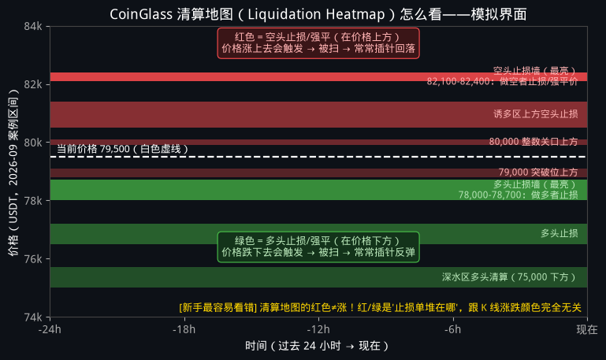
- 红/绿柱子代表什么：红色条带（价格上方）= 空头止损/强平价（做空者的单子，价格涨上去触发）；绿色条带（价格下方）= 多头止损/强平价（做多者的单子，价格跌下去触发）。颜色越亮 = 单子越密集 = 墙越厚
- 怎么找密集区：看现价上方最近的亮红带（最近的空头清算墙）和下方最近的亮绿带（最近的多头清算墙）；密集区通常出现在前高上方、前低下方、整数关口两侧
- 怎么和 K 线对照：清算地图和 K 线两个窗口并排 → 把墙标到 K 线上 → 价格冲进红墙 = 扫空头止损 = 假突破高发（08 章案例 82,248）；止损放墙外侧（逻辑失效位）；K 线结构位和清算墙重合的位置可信度更高
- 新手坑：①不能只看爆仓总量——"今天爆了 5 亿"是结果不是原因，要看爆仓位置（爆在结构位=正常，半空中=异常）②不同币种清算分布不一样（BTC 的墙 ≠ ETH 的墙）③红色 ≠ 涨，清算地图的红绿只表示"止损堆在哪"
（完整步骤版见00-study-plan.md「工具上手：CoinGlass 清算墙手把手教学」）
反面提醒：爆仓数据是结果不是原因。看到"今天爆了 5 亿"不等于"要反转了"——要先想清楚它是不是在合理位（结构位/流动性池）爆的，这才能回到 01/03 章的框架里解释。
AiCoin — 中文行情聚合
它解决什么问题：手册里所有图表练习（01 章画结构、02 章看指标、08 章走查案例）都需要一个能画线、能切换周期、有指标的看盘环境——AiCoin 网页版/App 免费够用。
配合手册怎么用： - 01 章裸K练习：在真实 K 线上用画线工具标 HH/HL、支撑阻力、CHoCH——fig02/fig03 是教材，AiCoin 是练习场。每学一个形态，就打开 4H/1H 找 3 个真实例子标出来。 - 02 章指标面板：不用自己写代码算，直接调 EMA/RSI/MACD/布林面板，对照 fig04 的布局认识"指标长什么样、什么时候背离/钝化"。 - 05 章合约数据：多空比、持仓量、全网爆仓等数据在"合约"页都有，配合手册理解。 - 08 章案例回放：把 2026-09 假突破 82,248 / CHoCH 跌破 80,000 那次案例（fig15）在 AiCoin 上自己复盘一遍，再走一遍"结构→信号→入场→止损→出场"。
📖 手把手：价格预警怎么设（图文）
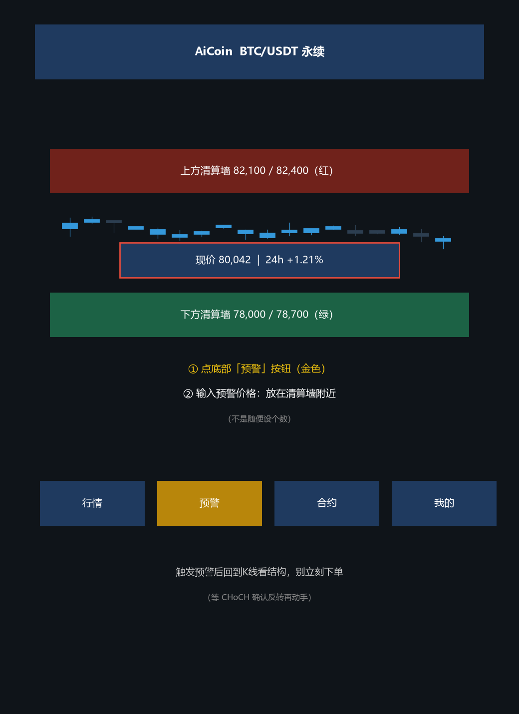
- 打开哪里：AiCoin App（或网页版）→ 打开 BTC/USDT 永续 → 底部点「预警」（金色按钮）
- 输入什么价格：预警设在清算墙附近（配合 CoinGlass 找墙）——不是随便设个数。比如上方 82,100-82,400 有空头墙，就在 82,000 设"到价提醒"；下方 78,000-78,700 有多头墙，就在 78,500 设
- 触发后怎么办：不要立刻下单——回到 K 线看结构：是插针扫墙（等回落/反转确认）还是真突破（等 CHoCH 回踩）。预警只是"叫你去看"，不是"叫你开单"
反面提醒："主力资金流"这类口径各平台算法不同，别当精确信号；看数据先点开口径说明，理解它统计的是什么。
SoSoValue — 投研数据：钱从哪来
它解决什么问题：手册 03b 章讲周期和叙事，但"叙事怎么变成真金白银"需要数据——SoSoValue 的 ETF 资金流、板块资金流就是这条证据链。
配合手册怎么用： - 03b 章周期验证：打开 BTC/ETH ETF 净流入页面，把资金流曲线和 fig19 减半周期图并排看——理解 2024 后 ETF 资金流如何成为驱动 BTC 中期节奏的核心变量（钱从传统市场流入）。 - 06 章验证方法论：写假设卡（hypothesis）之前，用它的板块/叙事历史数据做背景调研——"这个板块的热度是第一次还是反复出现？"；策略 OOS 落差太大时，也用它查是不是叙事/资金面变了。 - 盘前 Checklist：它的宏观日历（CPI/议息/大额解锁）直接在盘前列出，避免在大事件前开重仓裸奔。
📖 手把手：经济日历怎么用（图文）
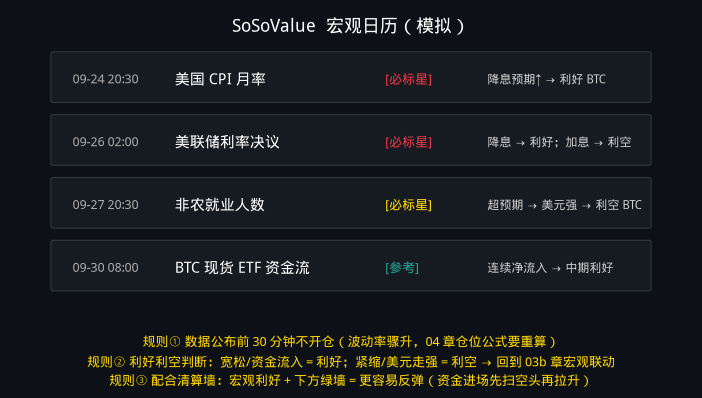
- 哪些事件要标星：美联储利率决议、CPI、非农——这三个对 BTC 波动率影响最大；ETF 资金流、大额解锁等参考即可。在日历上给高影响事件标星，盘前 Checklist 里写上时间
- 数据公布前多久不开仓：前 30 分钟不开仓（波动率骤升，你的止损宽度和仓位要按 04 章公式重算，别拿老参数进场）
- 怎么判断利好利空：宽松/资金流入 = 利好（降息、CPI 低于预期、ETF 净流入）；紧缩/美元走强 = 利空（加息、非农超预期、缩表）→ 传导路径见 03b 章宏观联动
- 怎么和流动性配合：宏观利好 + 下方清算墙 = 更容易反弹——利好消息点燃买盘，先扫下方空头止损墙（插针）再拉升。利好落地瞬间别追第一根 K 线，等结构
反面提醒：资金流数据有滞后和修正，别当日内信号；它是中期趋势确认工具，配合 03b 的周期框架用，别拿来做 5m 短线依据。
FinancialJuice — 实时财经快讯流
它解决什么问题：宏观数据发布（CPI/非农/议息）、央行讲话、地缘新闻——BTC 的高波动时刻往往由这些触发，它比新闻网站快、连续滚动、不带观点。
配合手册怎么用： - 盘前 Checklist：扫一遍今天/本周的宏观事件和时间，标出"哪些时段波动率会放大"，对应 03b 章宏观联动那一节。 - 04 章仓位推导：大事件前后波动率放大，止损宽度和仓位要跟着调（04 章 ATR 与仓位公式）——数据发布瞬间别挂单，滑点会把你的盈亏平衡胜率门槛抬高（05 章成本账）。 - 盘中突发事件：听到消息先停手，回 03 章"事件驱动"玩法判断：这个消息改变供需/叙事（趋势）还是只是一次情绪脉冲（噪音）？想清楚再动手。
📖 手把手：快讯怎么读（图文）
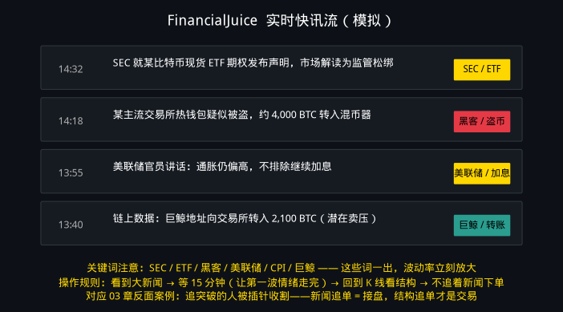
- 哪些关键词要注意：SEC / ETF / 黑客 / 美联储 / CPI / 巨鲸转账——这些词一出，波动率立刻放大（对应 03b 章宏观联动）
- 看到大新闻后怎么做：等 15 分钟（让第一波情绪走完）→ 回到 K 线看结构（是突破还是插针、有没有 CHoCH）→不追着新闻下单——对应 03 章反面案例：追突破的人被插针收割，新闻追单 = 接盘，结构追单才是交易
- 配合清算墙：新闻冲击波 + 上方/下方清算墙位置结合看——大新闻往往就是"扫墙"的催化剂（08 章案例的插针就是资金利用新闻/流动性制造的）
反面提醒：快讯告诉你"发生了什么"，不告诉你"会怎样"。看到新闻先回手册推导影响路径（传导链：事件→资金流→持仓→价格），别让标题替你下单。
使用纪律：工具给的是数据/事实，不是信号。任何数字都要回到手册的推导去解释——为什么它极端？它改变期望值还是只改变情绪？工具永远不会替你回答"该不该开单"。
新手阅读路径（先看图，再读书）
不用一次读完所有章。先按顺序看这 4 张图，建立"全书框架 → 价格结构 → 胜率门槛 → 杠杆死亡"的直觉链： - fig20 知识关联图（README）——看什么：整本书怎么串。00 学习计划 → Part A 看懂市场（01/02/03/03b）→ Part B 管好风险（04/05）→ Part C 验证进化（06/07）→ Part D 实战（08）。先知道每章解决什么问题，再开始读。 - fig02 市场结构（01 章）——看什么：HH/HL 与 CHoCH。这决定你"该在哪边找方向"，是所有裸K打法的地基。 - fig05 盈亏平衡胜率（04 章）——看什么：不同盈亏比下，扣掉手续费后需要多少胜率才保本。图上实测点（随机入场 1:1 ≈ 47.7%、1:3 ≈ 23.9%）全部低于保本线——先认清这个门槛，再谈任何策略。 - fig13 100x 随机模拟（04 章）——看什么：即使不爆仓（全仓 5% 保证金），负期望 + 高杠杆也会在 136~221 笔内归零。感受"手续费 + 胜率不足"如何联手杀死账户。
看完这三张图，再按上表逐章读——你会带着正确的问题去读每一章。
图表索引（全部由真实 BTC 数据 / 实测模拟生成）
| 图 | 文件 | 所在章节 | 内容 |
|---|---|---|---|
| fig01 | figures/fig01_candlestick_patterns.png | 01 | 12 个经典 K 线形态示意（蓝涨黑跌） |
| fig12 | figures/fig12_real_candles.png | 01 | BTC 4H 模拟K线（2021-02 行情形态）+ 冲高回落/CHoCH/插针标注 |
| fig02 | figures/fig02_market_structure.png | 01 | HH/HL 市场结构与 CHoCH |
| fig03 | figures/fig03_support_resistance.png | 01 | 支撑阻力/角色互换/扫荡 |
| fig04 | figures/fig04_indicators_panel.png | 02 | 多指标面板（EMA/布林/RSI/MACD/量）真实数据，蓝涨黑跌 |
| fig05 | figures/fig05_breakeven_winrate.png | 04 | 盈亏平衡胜率 vs 盈亏比（含手续费/实测点） |
| fig10 | figures/fig10_expectancy_heatmap.png | 04 | 期望值热力图（EV=0 线） |
| fig08 | figures/fig08_compounding.png | 04 | 复利曲线 |
| fig09 | figures/fig09_drawdown_recovery.png | 04 | 回撤恢复率 |
| fig06 | figures/fig06_liquidation_distance.png | 04/05 | 逐仓 vs 全仓爆仓距离 |
| fig07 | figures/fig07_fee_vs_leverage.png | 04/05 | 手续费占保证金比例 |
| fig11 | figures/fig11_money_management.png | 03/04 | 网格 vs 马丁 vs 固定仓位资金曲线 |
| fig13 | figures/fig13_100x_random_sim.png | 04 | 100x随机入场实战模拟（136/198/221 笔归零曲线） |
| fig14 | figures/fig14_review_template.png | 07 | 复盘表格模板（示例两行） |
| fig15 | figures/fig15_case_walkthrough.png | 08 | 假突破+清算反转案例走查（结构/入场/止损/止盈标注） |
| fig16 | figures/fig16_checklists.png | README | 盘前/入场前/出场后三张 Checklist 卡片 |
| fig17 | figures/fig17_theory_map.png | 03b | 经典理论地图（道氏/威科夫/周期/MTF 怎么配合） |
| fig18 | figures/fig18_wyckoff_spring.png | 03b | 威科夫吸筹 + Spring（弹簧效应）示意 |
| fig19 | figures/fig19_btc_halving_cycle.png | 03b | BTC 减半周期真实数据（2019-2026，两轮节奏） |
| fig20 | figures/fig20_knowledge_map.png | README | 知识关联图（00-08 章：看懂→管住→验证→实战的完整链路） |
| fig21 | figures/fig21_hhll.png | 01（随文） | 市场结构四件套 HH/HL/LH/LL（真实 4H） |
| fig22 | figures/fig22_support_resistance.png | 01（随文） | 支撑阻力角色互换（真实 1H） |
| fig23 | figures/fig23_liquidation_wall.png | 01（随文） | CoinGlass 风格清算墙（止损单密集区） |
| fig24 | figures/fig24_compounding.png | 04（随文） | 复利曲线（+0.5% vs −0.5%/笔，对数轴） |
| fig25 | figures/fig25_martingale_ruin.png | 03（随文） | 马丁格尔资金曲线实测模拟（3 局归零） |
| fig26 | figures/fig26_kelly_curve.png | 04（随文） | 凯利 f* 曲线（不同盈亏比） |
| fig27 | figures/fig27_leverage_distance.png | 04（随文） | 杠杆 vs 逐仓爆仓距离 |
| fig28 | figures/fig28_breakeven_winrate.png | 04（随文） | 盈亏比 vs 保本胜率（taker/maker） |
| fig29 | figures/fig29_case_202609.png | 08（随文） | 9/3-9/4 案例走查图（假突破/入场/止损/止盈） |
| fig30 | figures/fig30_trap_long.png | 03（随文） | 追多被套全程（同一段行情的对手视角） |
| fig31 | figures/fig31_coinglass_heatmap.png | 00/README（随文） | CoinGlass 清算地图教学示意（红/绿柱子含义、怎么看密集区） |
| fig32 | figures/fig32_aicoin_alert.png | README（随文） | AiCoin 手机界面预警设置教学示意 |
| fig33 | figures/fig33_sosovalue_calendar.png | README（随文） | SoSoValue 经济日历教学示意（标星事件+规则） |
| fig34 | figures/fig34_financialjuice_feed.png | README（随文） | FinancialJuice 快讯流教学示意（关键词+规则） |
随文插图说明：fig21-fig30 是"随文小图"，已直接嵌入各章关键概念旁边（打开章节就能看到图，不用来回翻）；fig01-fig20 是大图/全景图，供放大查看。小图也全部由真实 BTC 数据或实测模拟生成。
重新生成图表：行情类配图（fig02/03/04/21/22/29/30）使用真实 BTC 4H CSV 数据重绘；示意图类配图（fig01/05-20/23-28/31-34）由脚本直接生成。配色统一为蓝涨黑跌（阳线=蓝 #3498db，阴线=深灰 #2c3e50）。
自包含 HTML：BTC交易学习手册.html（全部 md + 图片 base64 内嵌，双击浏览器直接看，Ctrl+P 可打印）由build_html.py生成：修改任何 md 后运行python3 trading-learning/build_html.py重新生成。
核心纪律（从之前大量回测里总结的血泪教训）
- 胜率不是一切，期望值才是：EV = 胜率×平均盈利 − 败率×平均亏损 − 手续费。因为单笔结果随机、长期结果由期望值决定——70% 胜率但盈亏比烂照样亏，50% 胜率但 RR 1:3 照样赚，所以盯胜率不如盯 EV。
- 盈亏比 1:3 不等于 3 倍利润：市场先碰到你止损的概率不是线性的，随机入场 1:3 在 BTC 5m 实测胜率仅 ~24%。因为止损离现价近、止盈离现价远，价格自然更容易先碰止损——RR 越高保本所需胜率越低，但实际能到的胜率也越低，两者必须一起算（04 章盈亏平衡曲线）。
- 手续费是隐形成本之王：100x 杠杆下每次双向 taker ≈ 保证金的 15.4%，比 1R 止损还狠。因为 0.154% 的双边费在 100x 下被放大 100 倍，每次开平仓先吃掉 15.4% 保证金——不把它算进胜率门槛，回测利润就是幻觉（06 章账 1：+98% 被扣成 +33%）。
- "1% 就爆仓"取决于仓位：5% 保证金 + 100x 全仓，爆仓距离约 19.6%；100% 满仓，爆仓距离约 0.45%（04 章完整推导）。因为爆仓距离 = 1/杠杆 − 维持率 − 手续费，保证金占名义越小、能扛的反向距离越大——"100x 必爆"是误解，真正决定生死的是你留了多少保证金。
- 没有未来函数：T 日收盘后出信号，T+1 开盘价成交；禁止"用收盘价算又按收盘价成交"。因为收盘价在收盘瞬间才确定，你不可能在那一刻成交——用收盘价成交等于免费跳过了跳空，回测会系统性高估收益（06 章三条铁律）。
- 每次实验只改 1 个变量，与基准对比，报告扣成本后的收益。因为同时改 3 个参数，你根本不知道是哪一个在起作用——多变量混淆会把噪音当 edge；不和基准（恒多/随机）比，你赢的可能只是市场本身。
- 至少 200 笔样本再下结论；手动复盘会骗自己（选择性记忆 + 前视偏差）。因为 30 笔的胜率 95% 置信区间宽达 ±17.5%，横跨保本线，统计上等于没测（06 章 3.3）；而大脑只记赚钱的单，不程序化统计就无法纠偏。
- 学习的捷径是复盘 → 假设 → 程序化验证，不是看更多指标。因为看指标解决不了"我的 edge 到底存不存在"——只有把错误命名（复盘）、写成可证伪假设、用数据检验，才能把"感觉准"变成"系统准"。
交易前 / 中 / 后 Checklist（打印出来贴屏幕边）
卡片样式见figures/fig16_checklists.png。三张清单，每笔交易都过一遍。
【1】盘前检查（开电脑先做） - [ ] 看大周期结构：4H/1D 现在是什么方向？震荡还是趋势？ - [ ] 查重要数据/事件：今天有没有宏观数据、议息、大额解锁？（影响波动率） - [ ] 定好当日交易区域：今天只在自己的支撑/阻力区附近动手，区间外不做。 - [ ] 复盘昨天最后一笔交易：昨天犯的错，今天别再来一遍。
【2】入场前必检（手放鼠标上，先过 4 关） - [ ] 结构是否成立：CHoCH / 有效突破确认了吗？还是只是"感觉"？ - [ ] 止损位是否合理：放在结构外（逻辑失效位）了吗？不是拍脑袋。 - [ ] 风险占本金 ≤ 1-2%：仓位用公式算过（04 章 C），不是随手开。 - [ ] 有没有情绪冲动：FOMO / 报复性 / 无聊手痒？有就关掉下单键。
【3】出场后记录（平仓第一件事） - [ ] 立刻填复盘表（07 章模板，5 分钟）。 - [ ] 记录情绪标签：平静 / 紧张 / FOMO / 满足…… - [ ] 不要立刻开下一单：至少空仓冷静，复盘完再想下一笔。
三张清单的本质：盘前定计划 → 入场前查纪律 → 出场后收数据。做不到第 1 张和第 3 张的人，第 2 张再严格也会慢慢变形。
快速自查：你想交易什么风格？
- 看盘时间少 → 4H/1D 波段、趋势跟踪（03 章 A 类）
- 看盘时间多、能盯盘 → 1m/5m/15m 裸K日内（03 章 C/D 类）
- 讨厌盯盘、追求机械 → 网格/定投/趋势策略系统化（03 章 E 类）
- 追求高胜率 → 别忘了盈亏比通常同步下降（mini 止盈是反面教材，看 04 章）
📊 本章配图（大图 / 全景，可点击放大）
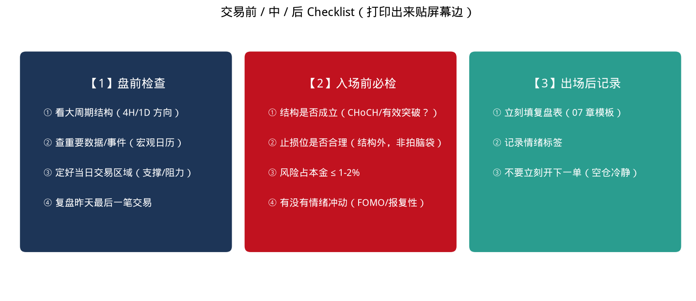
fig16盘前/入场前/出场后三张 Checklist 卡片
00 · 30 天学习计划（自学路线图）
00 · 30 天学习计划（自学路线图）
本章解决什么问题：学什么、按什么顺序、每天花多少时间、学到什么程度算过关。 用法：把本页打印出来贴在桌前，每天打卡。自测标准不过关就放慢，不要赶进度。为什么不过关要重来：后面每一章都是在前一章的地基上盖楼——第 1 周的结构识别没练成，第 2 周的数学公式就只是一串字符；第 2 周的笔算没过关，第 3-4 周的交易规则就会变成"凭感觉"。带着窟窿往后赶，等于在沙地上盖楼，迟早整体返工，反而更慢。
总览
| 阶段 | 天数 | 主题 | 文件 | 每天时长 | 阶段自测标准 |
|---|---|---|---|---|---|
| 第 1 周 | 1-7 | 地基：裸K + 合约机制 | 01 → 05 | 45-60 分钟 | 能徒手画出 BTC 1H 结构图（HH/HL/CHoCH/流动性池）；能说出爆仓引擎怎么工作 |
| 第 2 周 | 8-14 | 数学与风控 | 04（先）→ 02 | 60 分钟 | 不看公式能算：盈亏平衡胜率、仓位大小、清算价、期望值；5 道笔算题全对 |
| 第 3-4 周 | 15-30 | 系统化 | 03 → 03b → 06 → 07 → 08 | 60-90 分钟 | 写出自己的交易假设卡；完整复盘 5 笔模拟交易；做出自己的交易 checklist |
每天固定节奏：阅读 + 笔记 40 分钟 → 刷当天速记卡（Anki）10 分钟 → 写 3 行学习日志 5 分钟。周日 60 分钟做周总复习（重做本周所有思考题，不看答案）。为什么是这个节奏：阅读只解决"看懂"，间隔重复（Anki）解决"不忘"，写 3 行日志解决"会不会用"——三者缺一个，知识都会停留在"看过"而不是"会做"；周日重做思考题则是强制提取（主动回忆），比再读一遍有效得多。
🗺️开始前先做一件事：打开 figures/fig20_knowledge_map.png 看 2 分钟——知道每章解决什么问题、怎么串成链路（看懂 → 管住 → 验证 → 实战）。为什么先看全景图：后面 8 章是一个闭环（01 看懂结构 → 04/05 管住风险 → 06/07 验证复盘 → 08 实战），先看一眼全貌，才不会在某一章里纠结细节时忘了它在整条链里的位置。然后从 D1 开始。
工具上手：CoinGlass 清算墙手把手教学（配合 01 章 3.4、08 章案例）
README「开工前准备」的工具清单只说了"什么时候用 CoinGlass"，这一节教你怎么实际操作。先学 01 章 3.4 再上手看，就不会被红绿绕晕。
第 1 步：打开哪个页面
- 浏览器打开coinglass.com（免费，网页版即可，不用注册；App 功能一样）
- 顶部导航栏找到Liquidation（清算）→ 点进去就是清算页面
- 页面中间的大图就是Liquidation Heatmap（清算热度图/清算墙）：横轴 = 时间（默认近 24 小时，可调 12h/24h/7d），纵轴 = 价格
- 左上角可切换币种（BTC/ETH/其他）和合约类型——新手用默认的BTC 永续就行
第 2 步：图怎么看（对照下图）
- 图中横向彩色条带= 该价格附近堆了多少"会被强平/止损"的单子
- 红色条带在价格上方= 空头止损/强平价（做空的人把止损放在这，价格涨上去就触发）
- 绿色条带在价格下方= 多头止损/强平价（做多的人把止损放在这，价格跌下去就触发）
- 颜色越亮 = 单子越密集 = "墙"越厚；白色虚线 = 当前价格
第 3 步：怎么找上方/下方的清算密集区
- 找到白色现价线
- 看现价上方最近的亮红带→ 最近的空头清算墙（涨到那里大概率插针）
- 看现价下方最近的亮绿带→ 最近的多头清算墙（跌到那里大概率插针）
- 密集区通常出现在：前高上方、前低下方、整数关口（80,000/79,000）两侧——因为新手止损都放那里
第 4 步：怎么和 K 线对照看
- CoinGlass 清算地图 + 交易所 K 线图（1H/4H）两个窗口并排（CoinGlass 的币种页里也能叠加 K 线）
- 把清算墙的位置标到 K 线上：比如"82,100-82,400 有空头墙" → 对应 08 章案例的假突破位
- 用途①找插针目标：价格冲进红墙 = 扫空头止损 = 常常假突破回落（08 章案例 82,248）
- 用途②放止损：把止损放在墙外侧（逻辑失效位），而不是墙里面（01 章 3.4 的机制推导）
- 用途③验证结构：K 线结构位和清算墙位置重合时（比如前高 = 空头墙），那个位置的可信度更高
第 5 步：新手最容易看错的地方（划重点）
- ❌把红色当"要涨"——清算地图的红/绿是"止损堆在哪"，跟 K 线涨跌颜色完全两码事。"上方一片红"的意思是"上方有空头止损等着被扫"，不是看涨信号
- ❌把清算墙当"一定会到的目标"——墙是流动性池，价格可能被吸过去、也可能根本不碰；扫完不一定反转（可能继续走）
- ❌忽略时间范围——7 天地图上的老墙可能早就扫完了；要看"当下价格附近、近 24h"的墙
- ❌只看爆仓总量——"今天爆了 5 亿"是结果不是原因；要看爆在哪个位置（爆在结构位 = 正常，爆在半空中 = 异常）
- ❌不看币种/合约类型——BTC 的墙和 ETH 完全不同；永续和交割的地图也不同
配套图：fig31（本页模拟界面）+ fig23（清算墙概念图，01 章 3.4 详解）。D3 的"标出所有止损密集区"就用这个工具做。
第 1 周（D1-D7）：地基——先学会"看"市场****
| 天 | 内容 | 关键动作 |
|---|---|---|
| D1 | 01 章：K 线形态 | 打开真实 1H 图，找出 5 个上影线/锤子/吞没，截图标注 |
| D2 | 01 章：市场结构 | 找 10 个 HH/HL、10 个 LH/LL，画结构线 |
| D3 | 01 章：支撑阻力 + 流动性 | 标出图上所有"止损密集区"（前高上方/前低下方） |
| D4 | 05 章：合约机制（杠杆/爆仓/资金费） | 用笔算题练 3 遍清算价公式 |
| D5 | 05 章：插针/滑点/手续费 | 对比 taker vs maker 成本 |
| D6 | 复习 + 图 19 减半周期 | 徒手画 BTC 2019-2026 大周期走势（不看图） |
| D7 | 阶段自测 | ✅ 徒手画 1H 结构图；✅ 说出假突破怎么杀流动性；✅ 5 张速记卡脱口而出 |
第 2 周（D8-D14）：数学与风控——先学会"算"账****
| 天 | 内容 | 关键动作 |
|---|---|---|
| D8 | 04 章：期望值与盈亏平衡胜率 | 算 3 组盈亏平衡胜率（不同费率/盈亏比） |
| D9 | 04 章：仓位公式 | 笔算题：不同止损距离下的仓位 |
| D10 | 04 章：爆仓距离（逐仓/全仓） | 笔算题：10x/25x/100x 清算价 |
| D11 | 04 章：手续费与复利 | 算"100 笔 1% 手续费 vs 无手续费"差异 |
| D12 | 02 章：指标四类 | 每个指标只记"算什么/怎么用/何时失效"一句话 |
| D13 | 02 章：指标组合 | 只保留 2-3 个指标，别堆叠 |
| D14 | 阶段自测 | ✅ 5 道笔算题全对（不看公式）；✅ 说出手续费如何杀死 100x 账户 |
第 3-4 周（D15-D30）：系统化——把知识变成规则****
| 周 | 内容 | 关键动作 |
|---|---|---|
| D15-17 | 03 章：玩法流派 | 选出 1 个想深入的打法，写下"为什么选它" |
| D18-20 | 03b 章：经典理论 | 画出"假突破=Spring=流动性猎杀"的等价关系图 |
| D21-23 | 06 章：验证方法论 | 为你的打法写一张 hypothesis.md（研究假设卡） |
| D24-26 | 07 章：复盘 + 08 章：案例 | 用 08 章案例做一次完整复盘；再用复盘表复盘自己 5 笔模拟交易 |
| D27-28 | 整合 | 做出自己的"盘前/入场前/出场后"checklist；写交易规则 10 条 |
| D29-30 | 模拟盘（只做模拟） | 用规则模拟交易 10 笔，每笔填复盘表；统计胜率/期望值 |
| D30 | 结业自测 | ✅ 有假设卡；✅ 有 checklist；✅ 有 10 笔模拟复盘记录；✅ 能讲清"我什么时候不做" |
自测标准（具体化，别自欺）
- 第 1 周结束：拿一张你没见过的 1H 图，5 分钟内：画出结构线、标出 3 个流动性池、指出哪里会假突破。做不到 = 第 1 周重来。
- 第 2 周结束：手机关掉，纸笔算：①止损 2%、盈亏比 1:2、taker 双边 0.154%，保本胜率是多少？②账户 5000U、风险 2%、止损 1.5%、10x，开多少名义？③100x 满仓的爆仓距离？全对才算过。
- 第 3-4 周结束：你的假设卡、checklist、10 笔模拟复盘三者能互相咬合：复盘里每笔单都能对应 checklist 某条规则。
常见问题
- 一天学不完怎么办：按"关键动作"优先，速记卡可以后补。为什么宁可放慢也不要带窟窿：第 2 周起所有内容都建立在"你已经能徒手认结构"和"你会笔算"这两件事上——如果第 1 周的 HH/HL 还画不利索，第 4 周写出来的交易规则就会自相矛盾，等于白学。宁可 D7 自测不过关重来，也不要带着窟窿进第 2 周（后面全是建立在数学上的）。
- 要不要先学指标再学裸K：不要。为什么先结构后指标：所有摆动指标（RSI/MACD/KDJ）都是价格的衍生品——RSI 是涨跌幅的比值、MACD 是两条 EMA 的差，它们只是把你已经能在 K 线上看到的东西换个方式画出来。先学指标会养成"看信号下单"的习惯，而忽略信号背后的结构位和流动性；先学裸K，你才能看懂指标在什么位置失效（比如强趋势里 RSI 长期超买）。指标是裸K的衍生品（02 章会说），先结构后指标。
- Anki 卡什么时候刷：每天 10 分钟刷当天的卡 + 30 张随机旧卡。为什么用间隔重复而不是突击：记忆的遗忘曲线在学完后 24 小时内最陡，当天刷一次等于在遗忘前加固；间隔重复比考前突击背诵有效 10 倍，而且交易规则需要在实盘瞬间调用，只有进入长期记忆才反应得过来。
下一步：从01-naked-candlestick.md开始，D1。
📊 本章配图（大图 / 全景，可点击放大）
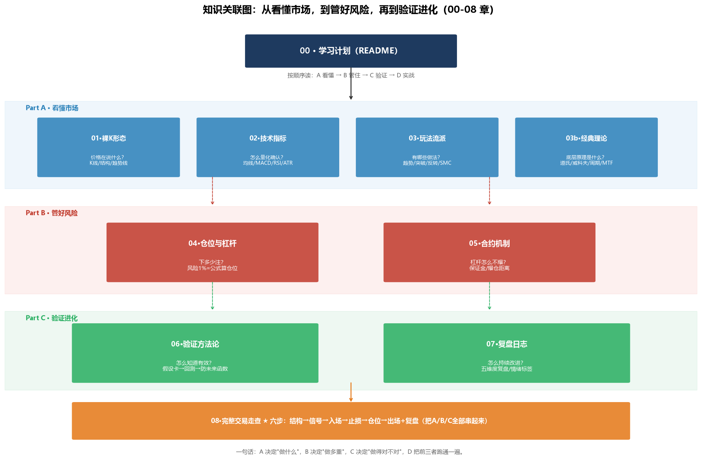
fig20知识关联图（00-08 章：看懂→管住→验证→实战的完整链路）
01 · 裸K与价格行为（自学版）
01 · 裸K与价格行为（自学版）
本章解决什么问题：为什么你总在"突破买入"后立刻被套？为什么价格总在你想止损的位置反着走？ 答案不在指标里，在 K 线和结构里。学会这章，你就有了后面所有章节的地基。 配套图：fig01_candlestick_patterns.png（12 个经典 K 线形态）、fig02_market_structure.png、fig03_support_resistance.png、fig12_real_candles.png、fig21_hhll.png、fig22_support_resistance.png、fig23_liquidation_wall.png（均模拟 BTC，蓝涨黑跌）
1. 直觉理解（一句话本质）
K 线是"多空交战留下的脚印"，结构是"脚印画出的地图"，流动性是"地图上埋雷的地方"。 - 一根 K 线 = 一段时间内（1m/5m/1H/4H/1D）的开高低收。收盘价 > 开盘价 = 蓝（多胜/阳线），收盘价 < 开盘价 = 黑（空胜/阴线）。上下影线 = 某一方曾被推回去。 - 形态（锤子/吞没/十字星等）只是"某一方反击失败"的快照；形态本身不预测，它告诉你交战结果。 - 真正的信息在结构里：一系列高低点的排列方式。
2. 数学/逻辑（为什么有效）
K 线形态有效（如果有效的话）的唯一逻辑是供需失衡 + 止损单集中： - 价格创新高/新低时会扫掉上方空头止损或下方多头止损——这些止损单是"被迫成交的流动性"。 - 流动性被扫光后，推动价格的燃料就没了 → 反转。这就是"假突破"的力学解释。 - 所以形态不重要，形态发生的位置（结构关键位 + 流动性池）才重要。同样的锤子线，在支撑位是反弹信号，在半空中毫无意义。
记住这个因果链，后面所有章节（Spring、清算反转、CHoCH）都是它的换皮说法：止损单集中在结构位 → 价格被吸引过去 → 扫止损（插针）→ 燃料耗尽 → 反转
3. 实战应用（BTC 上怎么用）
3.1 市场结构：HH/HL/LH/LL（看 fig21）
上升趋势: HH（更高的高点）+ HL（更高的低点） 下降趋势: LH（更低的高点）+ LL（更低的低点） 震荡: 高点低点都没有递进
BOS（Break of Structure，结构突破）= 顺趋势方向突破最近的摆动点：上升趋势中价格向上突破最近一个 HH = 看涨 BOS，确认趋势延续；下降趋势中向下突破最近一个 LL = 看跌 BOS。它是"继续拿着/顺势加仓"的信号。
CHoCH（Change of Character，性质改变）= 趋势的第一次反向破坏：上升趋势中价格向下跌破最近一个 HL（更高低点）= 看跌 CHoCH，是反转的第一次预警；下降趋势中向上突破最近一个 LH = 看涨 CHoCH。CHoCH 之后若再走出 LH+LL，才是趋势真正转空的确认（即原文说的"上升趋势中出现第一个 LH = 结构可能反转"）。
两者区别：BOS 是延续信号（顺趋势突破，趋势还在），CHoCH 是反转预警（第一次反向破坏，趋势可能要拐）。为什么必须区分 BOS 和 CHoCH：把 BOS 误判成 CHoCH，你会在趋势最猛的时候提前反手做空被甩下车；把 CHoCH 误判成 BOS，你会在反转已经开始时还顺势追单，正好买在顶/卖在底。一句话——BOS 告诉你"继续拿"，CHoCH 告诉你"准备跑/别再追"，二者操作方向完全相反，混了就是送钱。
- 每天做一次：打开 1H 图，画 HH/HL/LH/LL 连线，问自己"现在是什么趋势、上一个 BOS 还是 CHoCH"。为什么每天练：结构识别是肌肉记忆——不练就会在实盘里把 LH（高点降低）误看成 HH（高点抬高），方向判反了仓位也就反了；每天画一遍，实盘里才能一眼认出 CHoCH。
- CHoCH 是 08 章案例的入场核心：跌破 80,000 那根大阴线 = 1H 上升结构中的看跌 CHoCH（跌破最近 HL）。
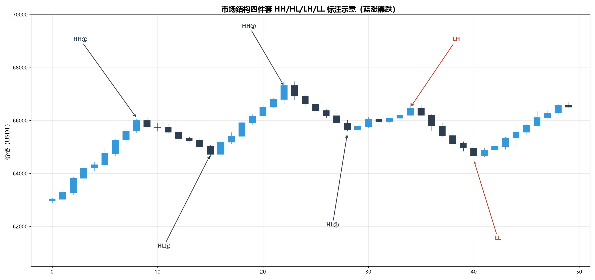
看上面这张图：左边HH①（更高高点）配HL①（更高低点）= 上升趋势；中间HH②突破前高、HL②不破前低 = 趋势延续；右边出现LH（高点降低）+LL（低点降低）= 趋势转空。趋势 = 这些点递进的方向，不是一根K线决定的。
3.2 支撑阻力 + 角色互换（看 fig22）
- 阻力被突破后变支撑，支撑被跌破后变阻力（角色互换）。为什么会互换：因为同一批人在同一个价位做了相反的决定。阻力位上没买着的人，等价格一回踩就想上车（变成买方）；之前在阻力位被套做空的人，价格突破后成了浮亏，一回踩他们就平仓止损（也是买方）——两股买盘叠加，原来的阻力就从"压着价格的墙"变成"托着价格的地板"。支撑跌破后同理翻过来。
- 实战：突破后回踩"旧阻力"不破 = 确认（说明上面那两股买盘真的在）；突破后立刻跌回 = 假突破（别追，说明突破时根本没有真实买盘接力）。为什么要等回踩确认而不是突破当天追：突破瞬间的价格可能是插针扫止损打出来的，只有回踩不破才能证明"突破是真的、买盘是实的"。
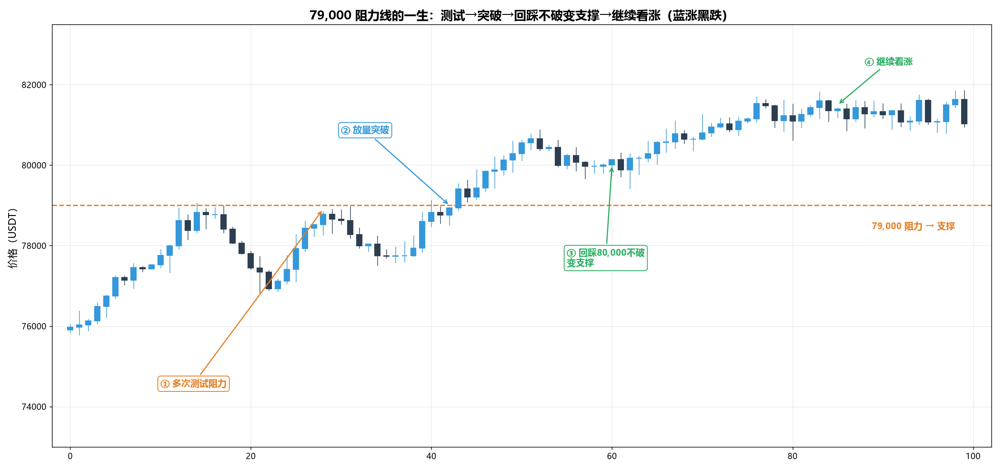
看 79,000 这条线的一生：多次测试不破（阻力①）→ 放量突破（②）→ 回踩原阻力 79,000 不破、变支撑（③）→ 继续看涨（④）。同一批人，同一价位，角色互换。
3.3 假突破 / 流动性猎杀（本手册最核心的概念）
- 前高上方 = 空头止损池；前低下方 = 多头止损池。
- 假突破 = 价格故意穿过关键位、扫掉止损、然后收回（看 fig12 的冲高回落标注）。
- 交易含义：
- 不要在突破瞬间追单（你大概率是流动性本身）；
- 等"突破失败收回"的信号（2-3 根 K 线收回突破位）= 反转机会；
- 08 章案例、03b 章 Spring 都是这一个故事的变体。
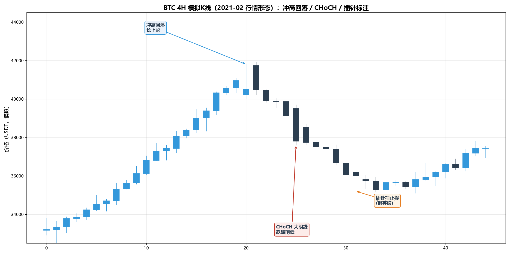
看 fig12：价格冲高扫掉上方空头止损（插针）后快速回落——这就是"假突破"的现场：追突破的人买在最高点，扫止损的大户把货卖给他们后抽身，价格失去买盘就跌回去。为什么"收回"才是信号、而不是"冲高"本身：冲高只是证明上方有止损可扫；只有扫完后又收回来，才证明"扫完没燃料继续涨"=反转。所以等的是 2-3 根 K 线收回突破位，不是那根插针本身。
3.4 推导：为什么"止损别放明显位"（前高上方一点点 = 送钱）
规则：止损不要放在"人人都会放"的位置——比如前高上方 10 美元、整数关口上方一点点。下面推导为什么。
机制推导（三步）： - 止损单是"已知的强制买/卖盘"。你的止损单挂在交易所，就是一张"价格到 82,410 就必须市价卖出"的挂单。它和其他几千张同位置的止损单一起，构成一个可见的流动性池。 - 价格会被吸引过去。为什么？因为"扫掉止损池"对大户/机器人来说是确定的成交机会：他们知道突破 82,400 会触发连环卖单（价格被砸下去），于是提前在 82,400 上方埋伏卖单——他们卖给你，你被迫割肉。 - 扫完就没了燃料。止损单被触发 = 这些被迫卖单一次性成交完毕，推动价格继续下跌的抛压消失 → 价格经常在扫完止损后反弹（假突破）。
具体账（真实案例 2026-09-03，08 章完整展开）：
假设你在 80,500 做空（看空假突破），止损放“前高 80,514 上方一点” = 80,550。
9/3 21:00 价格插针到 82,248： - 你的止损 80,550 被扫了（价格涨破 80,550 触发买入平仓） - 你在 80,550 割肉离场 - 但价格之后一路跌到 74,910——你方向看对了，却被先扫止损
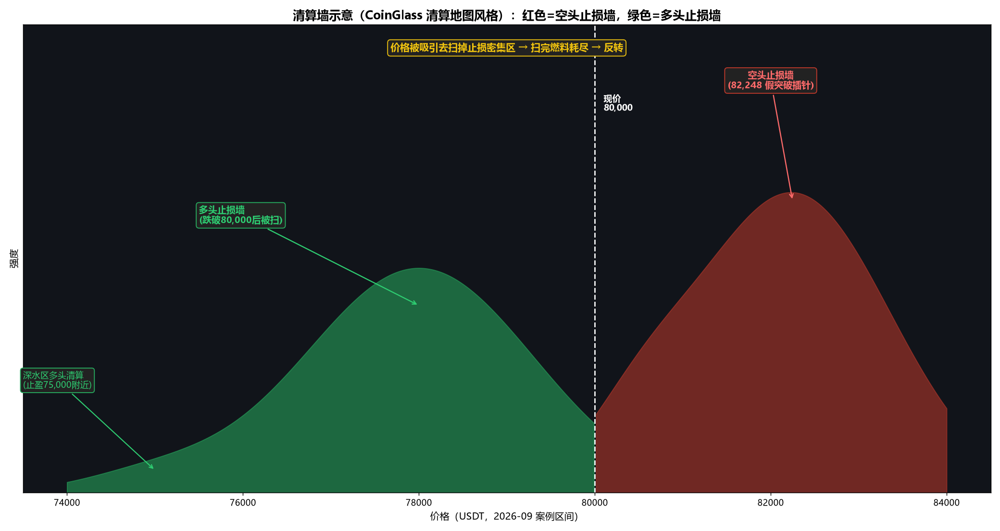
这张图就是“清算地图”长什么样：价格上方的红墙是空头止损/清算单密集区，下方的绿墙是多头止损/清算单密集区。价格会被吸过去扫墙——扫完燃料耗尽就反转（82,000 追多的人就是燃料）。
正确做法：止损放“逻辑失效位”（82,400，插针上方）。
价格插针 82,248 没到你止损 → 你拿住单子 → 等到 CHoCH 确认后盈利。
边界（止损放哪才对）： - 对：结构止损 = 价格回到这里 = 你的入场逻辑失效（如插针高点上方、突破前低下方），哪怕距离远。 - 错：心理关口/前高前低"上方一点点"（这是止损池中心，专门被扫）。 - 折中：止损距离要 ≥ 1.5-2×ATR（02 章推导），否则正常波动就把你扫出去（03 章 3.3 节）。
3.5 推导：为什么"突破瞬间追单"= 你大概率是流动性本身
对手方分析：突破瞬间，市场上谁在卖？ - 突破前的空头止损单（被迫买入）——他们是被扫的，不是主动的； - 突破后追多的散户市价单（你）——你的买入被"突破动能"吸引； - 埋伏在突破位上方的大户限价卖单（等流动性来）——他们早就挂好了。
结果：突破瞬间买入 = 你接的是大户的卖单（2 和 3 成交），而大户卖给你之后，价格失去买盘支撑 → 回落。你在为别人的"流动性猎杀"提供燃料。
账：追 82,000（08 章案例）vs 等回踩 79,500，同一笔行情利润差 2.4 倍（03 章 2.2 节完整推导）。追单的数学代价是止损距离和 RR，不是运气。
3.6 关键：位置 vs 形态（为什么同样的锤子线在支撑位才有效）
推导：锤子线 = 下影长、收盘回到上半部 = "下方买盘把价格顶回来了"。但顶回来之后呢？ - 在支撑位：下方就是多头止损池。价格跌破支撑 → 触发止损卖单 → 如果还能被买盘接住拉回，说明多头意愿强于止损抛压= 供需反转的强证据 → 后续上涨有"燃料"（止损池被清空，上方阻力减小）。 - 在半山腰：下方没有止损池，跌破 = 没有强制抛压被消耗，"顶回来"只是普通的多空拉锯 → 没有信号价值。
结论：形态是"证据"，位置是"案件"——同一个证据在不同案件里分量完全不同。
4. 新手误区（最常见错误）
- ❌只看形态不看位置：锤子线在半山腰 = 噪音，在支撑位 = 信号。
- ❌把插针当突破：盘中插针不算，收盘价站上才算（道氏确认原则，03b 章）。
- ❌在突破瞬间市价追单：你追的那一单可能正是主力要扫的止损单。
- ❌不会画结构就找形态：先画 HH/HL，再谈形态。
速记卡（抄进 Anki，每天刷）
- Q: 上升趋势的定义？ A: HH + HL（更高的高点和更高的低点）；下降 = LH + LL。
- Q: BOS 是什么？ A: 顺趋势方向突破最近摆动点（升势破最近 HH / 降势破最近 LL），是趋势延续信号，拿着/顺势做。
- Q: CHoCH 是什么？ A: 趋势第一次反向破坏（升势跌破最近 HL = 看跌 CHoCH / 降势突破最近 LH = 看涨 CHoCH），是反转预警，别再追、准备跑。
- Q: BOS 和 CHoCH 最关键的区别？ A: BOS = 延续信号（继续拿），CHoCH = 反转预警（别追/准备跑），操作方向相反。
- Q: 为什么假突破会反转？ A: 扫掉止损池的流动性后燃料耗尽（供需失衡反向）。
- Q: 插针算突破吗？ A: 不算，收盘价站上才算。
- Q: 阻力被突破后变成什么？ A: 支撑（角色互换：解套盘 + 踏空盘一起变买方）。
- Q: 形态重要还是位置重要？ A: 位置（结构关键位 + 流动性池）远比形态本身重要。
思考题（先自己想，答案在本节末尾）
- 一根 1H K 线：开盘 30,000，最高 30,500，最低 29,500，收盘 29,800。它是什么颜色？上影线长还是下影线长？说明当时哪方更占优？
- 价格在 30,000 横了 3 天，某天突然一根大阳线冲到 30,600 收盘，但第二天又跌回 30,000 下方。你手里有按 30,500 追的多单——现在该想什么？为什么？
- 为什么"同样的锤子线"在支撑位比在半山腰有效？用流动性/止损单的逻辑解释。参考答案1. 收盘 29,800 < 开盘 30,000 →黑（空胜/阴线）。影线：上影 500（30500-30000）、下影 300（30000-29500）→ 上影长。说明多头冲高被空头打回，空方占优。 2. 该想"我可能买在了流动性池里"。冲到 30,600 收盘是假突破（没能站稳），跌回 30,000 下方 = 突破失败 → 上方 30,600 附近的多头止损/追多单就是被扫的流动性。正确动作是按计划止损（如果你没设止损，这就是第一课）。 3. 因为支撑位下方是多头止损池：价格跌破支撑会触发批量止损卖单 = 一次性供给；如果价格还能快速收回，说明这批供给被接住了 → 供需反转的强证据。在半山腰，锤子线两边都没有止损单，没有"燃料"可扫，也就没有反转的力学基础。
新手最常踩的坑（每周检查一遍）
- [ ] 我是不是又在半山腰追突破了？
- [ ] 我设的止损是不是正好放在"人人都会放"的位置（前高上方一点点）？（如果是，你就是在给别人送流动性）
- [ ] 我画结构线是"事后画"还是"事先画"？（事后再画 = 自欺）
📊 本章配图（大图 / 全景，可点击放大）
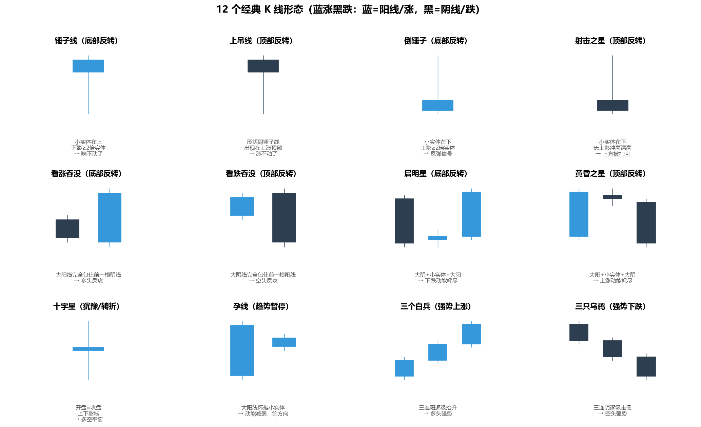
fig01 12 个经典 K 线形态示意（蓝涨黑跌）
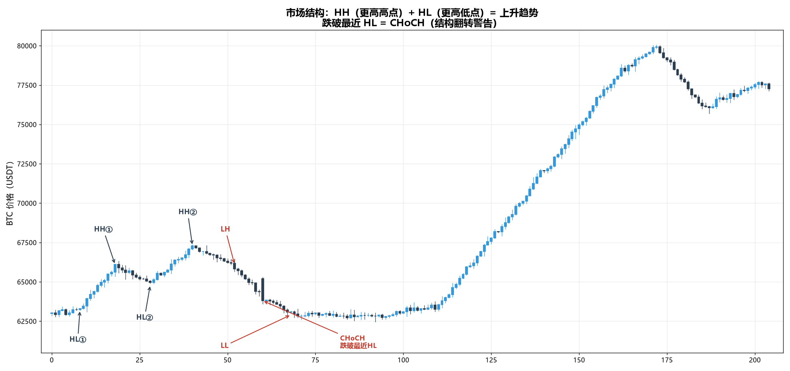
fig02 HH/HL 市场结构与 CHoCH
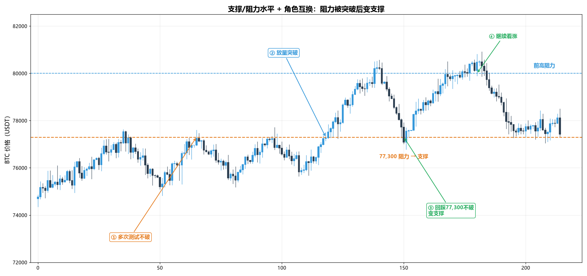
fig03 支撑阻力/角色互换/扫荡
fig12 BTC 4H 模拟K线（2021-02 行情形态）+ 冲高回落/CHoCH/插针标注
fig21 市场结构四件套 HH/HL/LH/LL 标注示意（蓝涨黑跌）
fig22 79,000 阻力线的一生：测试→突破→回踩原阻力不破变支撑→继续看涨（蓝涨黑跌）
fig23 清算墙示意（CoinGlass 风格，2026-09 案例区间）
02 · 技术指标全景（自学版）
02 · 技术指标全景（自学版）
本章解决什么问题：指标那么多，为什么堆了一屏还是亏？哪个指标值得用，哪个是噪音？ 答案：先懂每个指标"算什么 → 怎么用 → 何时失效"，再只留 2-3 个。 配套图：fig04_indicators_panel.png（真实 BTC 数据多指标面板）
1. 直觉理解（一句话本质）
指标是 K 线价格/成交量的"加工品"，不是新信息。它只是把已经发生的价格变化换个算法再画一遍。 - 趋势类（均线/ADX）：回答"方向是什么"。 - 摆动类（RSI/KDJ/MACD）：回答"短期是不是过热/超卖"。 - 量能类（OBV/成交量）：回答"这波移动有没有人真的参与"。 - 波动类（布林/ATR）：回答"现在波动多大、止损放多远"。
2. 数学/逻辑（公式怎么算的）
| 指标 | 公式本质 | 数学直觉 |
|---|---|---|
| MA(n) | n 根收盘价平均 | 平滑噪音，看方向 |
| EMA(n) | 加权平均，近期权重更大 | 对价格变化反应更快 |
| MACD | DIF=EMA12−EMA26；DEA=DIF 的 EMA9；柱=(DIF−DEA)（国内软件常×2 显示） | 两快慢均线之差：差变大 = 动能增强；金叉=DIF 上穿 DEA（看多），死叉=DIF 下穿 DEA（看空） |
| RSI(n) | RSI=100−100/(1+RS)，RS=平均涨幅/平均跌幅（默认 14 期，Wilder 平滑） | 涨跌力量的比值：>70 超买、<30 超卖；背离=价格新高但 RSI 未新高（看跌背离）/价格新低但 RSI 未新低（看涨背离） |
| ADX(n) | DI+ 与 DI− 的方向差（ADX 只衡量趋势强弱、不带方向） | >25 = 趋势存在（顺趋势做）；20-25 = 过渡区（谨慎，方向不明）；<20 = 无趋势/震荡（别追突破）。方向看 DI：DI+>DI− = 上升方向，DI−>DI+ = 下降方向 |
3. 实战应用（BTC 上怎么用）
- RSI>70 不自动做空（强趋势可以一直超买），但价格新高 + RSI 不新高 = 背离 = 动能减弱，值得警惕。为什么：超买只说明"涨得快"，强趋势里 RSI 可以长期贴在 70 以上（多头力量持续占优，Wilder 平滑的比值下不去）；真正能反映动能衰减的是"价格创新高但 RSI 没跟上"= 买盘力度在边际递减，这才是该警惕的信号。所以 RSI>70 本身不是反手理由，背离才是。
- ATR 放止损：止损距离 ≥ 1.5-2×ATR（Wilder 推荐 2×，行业惯例 1.5-2×），否则你是在给市场送钱（正常波动就把你扫了）。为什么用 ATR 而不是固定点数：ATR 度量的是"这根 K 线平均能走多远"，把止损设在它的 1.5-2 倍，等于用市场自己的波动幅度来过滤噪声——波动大的行情自动放宽、波动小的行情自动收紧；固定点数在 ATR 放大的崩盘日会被一根正常 K 线扫掉，在 ATR 极小的盘整日又过宽。这是指标对仓位管理最实用的贡献（3.1 节完整推导）。
- 布林带收口 = 变盘前兆：波动收缩后必然扩张，但方向不告诉你——等收口后第一根放量 K 线方向。为什么收口后会变盘：布林带是 20 日均线 ±2 倍标准差，收口 = 标准差收窄 = 多空双方都累了、没人愿意主动进攻，筹码在窄幅里换手堆积；这种"弹簧压到极致"的状态一旦被一根放量 K 线选边，积压的仓位会顺着同一方向一起动，所以收口后往往跟一波大行情。注意它只告诉你"要动了"，不告诉你"往哪动"，所以不能反向猜方向。
- ADX 先定环境再用指标：ADX>25 才顺趋势做，<20 只做震荡（高抛低吸/等突破收回），20-25 过渡区少动。为什么要先看 ADX：RSI、MACD 这类摆动指标在趋势行情里会长期失真（超买再超买），而均线在震荡里会被反复打脸；先用 ADX 判"现在是趋势还是震荡"，再决定用哪类指标，等于先选地图再走路。
- 只用 2-3 个：1 个趋势 + 1 个摆动 + ATR（管止损）。多了只会互相打架。为什么不能堆一屏：指标之间高度同源（都是价格的衍生物），RSI 钝化的时候 MACD 也在高位、KDJ 也超买——它们不是 3 个独立证据，而是同一条 K 线换了 3 个算法念同一句话，堆得越多你越容易"挑那个符合自己想法的指标"来找理由，而不是得到更多信息。2-3 个足够覆盖"方向 + 过热 + 止损"三件事。
3.1 推导：为什么止损要 ≥ 1.5-2×ATR（不是 1×，不是 0.5×）
问题：止损放太窄会怎样？用一个思想实验 + 真实数据推导。
思想实验：ATR = 平均每根 K 线波动（含跳空）。如果你的止损 = 0.5×ATR，意味着市场只要走出半根"平均 K 线"的波动你就出局。而 BTC 4H 的 ATR 通常在 0.8-2%——0.5×ATR 止损 ≈ 0.4-1% 的价格波动。这个幅度里有多少是"方向错误"、多少是"正常噪声"？大部分是噪声。
真实数据验证（本手册 6 年 BTC 4H 数据）： - 单日振幅 ≥ 5% 的天数：6 年里有几十天（2020-03-12 振幅 44.2%、2021-05-19 振幅 33.5%）； - 普通趋势日：2-5% 振幅是常态。
推导（数学期望角度）：设你的入场信号真实命中率 = p（信号确实对的比例）。止损 = 1×ATR 时，即使方向看对，一根正常波动 K 线就可能触发止损（价格先反向 1×ATR 再回正 = 被洗出局）。洗出局 = 你"看对了方向却亏了钱"，实际胜率从 p 掉到 p'：止损 0.5×ATR：噪声洗出概率极高 → p' ≈ p − 30~50%（经验估计，依据：波动分布） 止损 1.0×ATR：仍有一半噪声窗口 → p' ≈ p − 15~25% 止损 1.5-2×ATR：噪声窗口覆盖 1.5-2 倍平均波动，方向对了基本不会被正常波动扫掉 → p' ≈ p
代价：止损越宽，单笔亏损越大 → 仓位越小（04 章 5.4：名义 = 风险%/止损距离）→ 单笔盈利也小。1.5-2×ATR 是"信号保真度"和"仓位效率"的平衡点（Wilder 本人推荐 2×，1.5-2× 是行业惯例区间）——低于它，你的胜率被噪声偷走；高于它（3×ATR+），止损太远、仓位太小、盈亏比恶化。
边界： - 波动率骤变时（重大消息/崩盘日，ATR 会突然放大）：固定 2×ATR 可能变成"超宽止损"，此时按结构止损优先（01 章 3.4：逻辑失效位），ATR 只做下限参考。 - 超短线 maker 高频（03 章 1.2 节）：止损可以窄于 1.5×ATR——因为 maker 费率低、持仓极短，噪声窗口相对小；但代价是要求极高胜率（见 03 章 1.2 节日内账），不适合多数人。
新手最常踩的坑
- [ ] 我是不是又把指标当"预测工具"用了？
- [ ] 我的止损是不是小于 1.5×ATR？（是 = 立刻改）
- [ ] 我屏幕上是不是超过 4 个指标？（是 = 删到 3 个）
- [ ] 指标信号和 HH/HL 结构冲突时，我是不是还是按指标做了？
📊 本章配图（大图 / 全景，可点击放大）
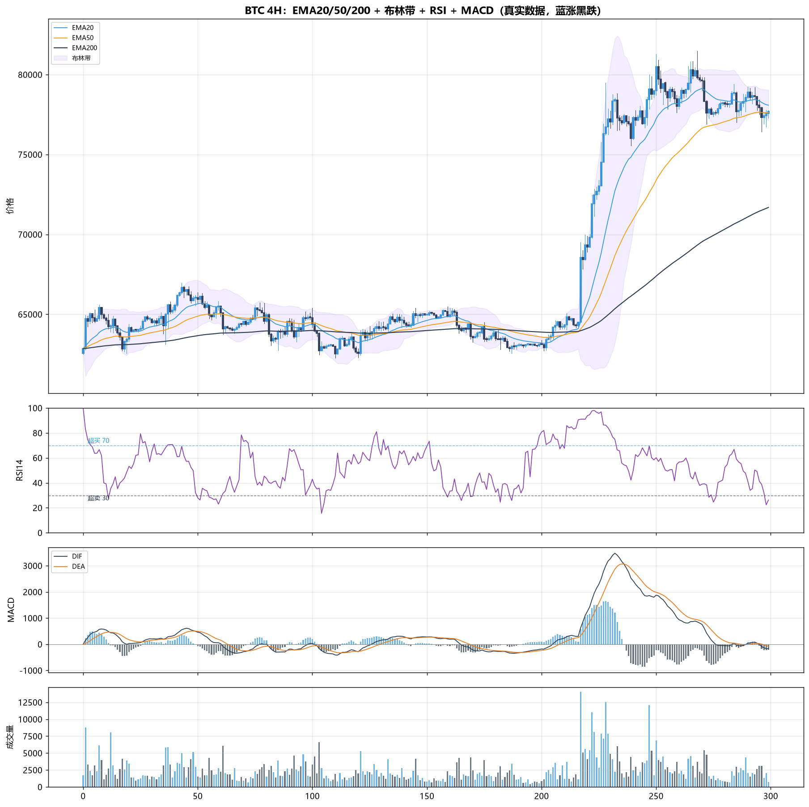
fig04 多指标面板（EMA/布林/RSI/MACD/量）真实数据，蓝涨黑跌
03b · 经典交易理论基础（实战向）
03b · 经典交易理论基础（实战向）
本章解决什么问题：道氏/威科夫/周期这些经典理论，到底哪些对 BTC 有用？怎么用？ 目标：掌握四把尺子——道氏定方向、威科夫找拐点、周期定仓位、多周期共振定执行。 配套图：fig17_theory_map.png（四把尺子配合）、fig18_wyckoff_spring.png（Spring）、fig19_btc_halving_cycle.png（减半周期真实数据）
1. 直觉理解（一句话本质）
经典理论 = 给市场结构起名字的体系。它们和 01 章 SMC/流动性/假突破共用同一套底层语言：供需失衡 → 价格移动到流动性池（止损/爆仓单）→ 扫掉后反转 → 形成结构（高低点）。学它们的唯一目的是：市场出现某个结构时，你能立刻知道该做什么、不该做什么。
2. 数学/逻辑（三条最硬的内核）
- 道氏：趋势 = 高低点递进。上升 = HH+HL，下降 = LH+LL，都不是 = 震荡。确认靠收盘价（插针不算——这就是 08 章"插针 82,248 不算真突破"的原因）。趋势分三阶段：积累（聪明钱悄悄买）→ 公众参与（主升）→ 派发（卖给接盘侠）。为什么是这三阶段：价格由资金推动——聪明钱信息最早、在底部无人问津时悄悄建仓（积累），建完仓市场才发现、大众跟着买（公众参与=主升浪），最后聪明钱把筹码派发给 FOMO 新进场者（派发=顶）；认出自己处在哪一阶段，就知道该跟谁站一边、该把仓位开多大。
- 威科夫三定律：供需定涨跌（成交量为证）；因果（横有多长竖有多高）；努力与结果（放量但价格不动 = 反转前兆）。
- 周期 + 情绪：BTC 每 4 年减半（供给减少），历史上减半后 12~18 个月主升、狂热见顶、熊 1-2 年。恐惧贪婪指数（0-100）是情绪的体温计，不是买卖信号。
为什么这几点是"数学"不是"玄学"：它们都建立在可观察的价格/成交量行为上，可被证伪（06 章假设卡可以检验"突破收回后反转概率"），不像艾略特数浪/江恩时间周期那样十个人数出十一种答案。
3. 实战应用（四把尺子）
3.1 尺子① 道氏：每天 30 秒定方向
打开 1D K 线，问：现在是 HH/HL、LH/LL 还是震荡？就这一个动作过滤一半烂交易。 - 2024-10 → 2025-01：日线 HH/HL → 只做多/回踩做多； - 2025-11 → 2026-06：日线 LH/LL → 多单别抢，反弹做空或观望； - 2026-07 → 09：低点抬高、高点未创新高 → 震荡 → 区间交易或空仓。
判断阶段不看新闻，看价格对消息的反应（利好不涨=派发期危险信号）。下降趋势反转要等 1D 收盘价突破最近一个 LH 才算初步确认，此前一切反弹都叫反弹。
3.2 尺子② 威科夫：找拐点（重点是 Spring）
吸筹事件链：PS（初步支撑）→ SC（恐慌放量暴跌，2020-03 新冠插针就是）→ AR（自动反弹）→ ST（缩量二次测试）→Spring→ SOS（放量大阳）→ LPS（回踩不破）。
Spring（弹簧）= 本章重点：
故意跌破前低，触发下方止损/爆仓单，拿到流动性后快速收回。散户看到"破位"割肉，价格却涨回去——这就是 01 章的假突破/流动性猎杀、08 章的清算反转，威科夫 100 年前给了同一个现象更优雅的名字。
BTC 上找 Spring：①先有下跌趋势+一段横盘；②跌破横盘低点（要放量）；③2-3 根 K 线内快速收回；④止损放跌破位下方（结构止损），目标=吸筹区上沿。危险：收回失败就是真破位（趋势继续）——区分靠"收回速度+成交量"，不是事后看。
派发是镜像（吸筹倒过来），完整事件链：PSY（初步供给 Preliminary Supply）→ BC（买入高潮 Buying Climax）→ AR（自动回落 Automatic Reaction）→ ST（二次测试 Secondary Test）→ UT（上冲回落 Upthrust）→ SOW（供给显现 Sign of Weakness）→ LPSY（最后供给点 Last Point of Supply）。为什么要记全链而不只看 UT：因为单独一个"冲高回落"在上涨中途也很常见，只有 PSY 先出现（聪明钱开始卖）+ BC 放量高潮（散户 FOMO 接盘）+ AR/ST 无力反弹 + UT 扫掉空头止损后跌回，才算派发完成；缺一环都可能只是正常回调而不是顶。2021-11 的 69k 顶可近似看作 BC+UT（放量冲顶 69k 后无力站稳）。
3.3 尺子③ 周期：定仓位上限（fig19 真实数据）
| 减半 | 日期 | 主升 | 周期顶 | 周期底 |
|---|---|---|---|---|
| 第 3 次 | 2020-05-11 | 2020 下半年 | 2021-11 顶 69k | 2022-11 底 ~15.5k |
| 第 4 次 | 2024-04-20（北京时间，区块高度 840,000） | 2024-11 起 | 2025-07 顶 126k | 2026-06 低 ~57.8k |
实战用法（对应 04 章）： - 积累期→主升期：趋势交易可正常仓位（单笔风险仍 ≤1-2%）； - 狂热见顶段（恐惧贪婪 >80）：降杠杆、减仓、只做短线或不做； - 熊市中段（LH/LL）：空仓观望或只做反弹空，别抄底接刀（2022 全年抄底的人亏得比 2021 追顶还多）。
恐惧贪婪指数用法：0-25 极度恐惧≈中期底部区域（分批买入区）；75-100 极度贪婪（2026-09 当前 78）——不追多，持仓分批止盈，新单缩小仓位。它滞后且可被操纵，只是环境滤镜，不是入场理由；底部要等道氏结构确认。
为什么"极端值降仓"（推导）：①情绪极值 = 拥挤交易：极度贪婪时多头仓位已满（资金费率常为正且高，05 章 2.1），新增买盘枯竭 → 上涨燃料不足，尾部风险（突然反转）放大；②波动率联动：极端情绪期波动率通常放大（02 章 3.3 波动回归），同样止损距离下爆仓概率翻倍（05 章思考题 3）；③不对称回撤：顶部追多的回撤恢复成本极高（04 章 4.2：亏 50% 要赚 100%）。所以">75 降仓"是三个独立推导的汇合点，不是感觉。
3.4 尺子④ 多周期共振：定执行
| 层级 | 周期 | 回答的问题 | 用哪个理论 |
|---|---|---|---|
| 大周期 | 1D | 该做多还是做空？ | 道氏 |
| 中周期 | 4H | 该在哪个区域等？ | 威科夫（供需区） |
| 小周期 | 1H | 具体哪根 K 线进？ | Spring/CHoCH/假突破 |
三层嵌套流程（08 章案例演示）：1D 震荡（只能区间交易）→ 4H 突破供给区（不追突破）→ 1H CHoCH 反转 → 三周期共振做空。强共振（1D 趋势 + 4H 回踩 + 1H 信号）= 高胜率窗口；逆势（1D 下跌 + 4H 反弹 + 1H 追多）= 胜率最低（SMC 回测 2024 慢牛逆势单胜率仅 17%）。规则：至少两层共振才开单，一层不满足=空仓。
为什么"至少两层"（推导）：单周期信号的胜率受噪声污染严重（02 章：指标滞后 + 波动噪声）；两层共振 = 两个独立证据链互相确认。数学直觉：如果单周期信号真实胜率 p₁ ≈ 55%（一般），两个独立信号都指向同一方向时胜率 ≈ p₁×p₂/(p₁×p₂+(1−p₁)(1−p₂))——p₁=p₂=0.55 时 ≈ 0.60（提升 5 个点）；而逆着大周期做，大周期本身已经把 p 压低到 40% 以下，再叠小周期噪声 → 实测 17%。共振不是玄学，是把信号胜率从"碰运气"推过保本线（04 章 p*）的乘法过程。
3.5 四把尺子怎么配合（fig17 理论地图）周期环境③ → 定仓位上限
大方向①道氏 → 定多空 找拐点②威科夫 → 定区域 执行④MTF → 定点位 ↓ 复盘(07) → 喂回假设卡(06)，下一轮更准
一句话：道氏告诉你"哪里是趋势"，威科夫告诉你"趋势在哪拐弯"，周期告诉你"下多大注"，MTF 告诉你"这根 K 线进不进"。四者共用同一套底层语言——供需、流动性、结构。
4. 新手误区
- ❌拿 Spring/UT 当独立入场信号：必须配合道氏方向（1D 结构）+ 放量收回确认，单看"破位收回"胜率不足。
- ❌在派发期追多："好消息+全民 FOMO+放量冲顶"后进场=接盘（2021-11 69k 最贵一课）。
- ❌把恐惧贪婪指数当抄底信号：极度恐惧可能持续数月，底部要等 1D 结构确认。
- ❌数艾略特浪/算江恩周期做交易：高度主观、可证伪性差；想研究时间维度去看数据统计，别信神话。
速记卡（Anki）
- Q: 道氏趋势定义？ A: HH+HL=上升，LH+LL=下降，都不是=震荡；确认靠收盘价。
- Q: 趋势三阶段？ A: 积累→公众参与→派发。
- Q: Spring 是什么？ A: 跌破前低扫掉止损后快速收回（放量）——假突破/流动性猎杀，100 年前叫威科夫弹簧。
- Q: 区分真破位和 Spring？ A: 收回速度（2-3 根 K 线）+ 成交量。
- Q: 周期实战三档？ A: 主升期正常仓；狂热期降杠杆；熊市中段空仓/反弹空。
- Q: 多周期共振最少几层才开单？ A: 两层（1D 方向 + 4H/1H 信号）。
- Q: 恐惧贪婪指数是什么？ A: 情绪体温计（0-100），环境滤镜，不是买卖信号。
思考题（先自己想，答案在末尾）
- 当前 BTC 日线是 HH/HL、LH/LL 还是震荡？你会据此把仓位上限设为多少（对照 fig19 周期位置）？
- 2026-09-04 那根大阴线跌破 80,000，用威科夫语言怎么命名这波行情？
- 为什么说 Spring 和 01 章"假突破/流动性猎杀"是同一个现象？区别只在名字吗？
参考答案：
- 以 2026-09 数据看：顶部 126k（2025-07）后下跌到 57.8k（2026-06），之后反弹——若反弹未创新高则仍是 LH/LL（下降趋势）或震荡；周期位置处于 2024 减半周期后段（顶已过），仓位上限应为低档：轻仓/空仓观望，不做重仓趋势单，只做区间或反弹空。
- 整段可命名：9/3 突破 79,000 是UT（上冲回落）候选——冲高 82,248 扫掉空头止损后无力站稳回落；9/4 大阴线跌破 80,000 是派发区完成 + 下行确认；威科夫语言里这叫"派发后的下跌段（Markdown）"。命名不重要，重要的是命名后你立刻知道：上方有大量套牢多单，反弹到 80,000-82,400 是供给区。
- 是同一个现象：价格故意扫掉止损池获得流动性后反转。区别只在"名字"和"观察层级"——威科夫在日线吸筹区命名它（Spring），SMC 在任意周期叫它流动性猎杀。底层机制相同：先有流动性池（前低下方止损），才有扫池反转。理解这一点，你就能在任何周期、任何品种上认出它（06 章验证它，08 章交易它）。
新手最常踩的坑
- [ ] 我今天看 1D 画了 HH/HL/LH/LL 吗？（30 秒的事）
- [ ] 我开单时有没有"至少两层共振"？（1D 方向 + 4H/1H 信号）
- [ ] 我是不是又在"极度贪婪 >75"时满仓追多了？
- [ ] 我看到"破位收回"时，确认了放量和收回速度吗？
下一步：04 章开始学仓位与杠杆的数学——理论决定方向，数学决定生死。
📊 本章配图（大图 / 全景，可点击放大）
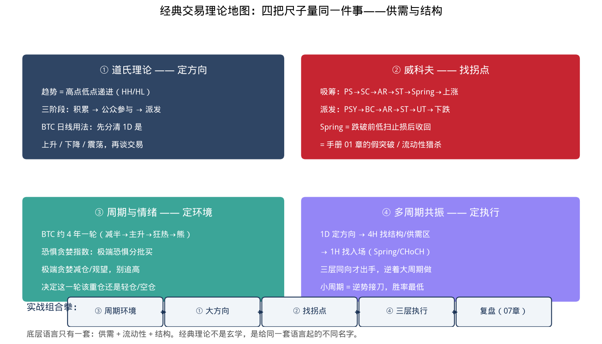
fig17经典理论地图（道氏/威科夫/周期/MTF 怎么配合）
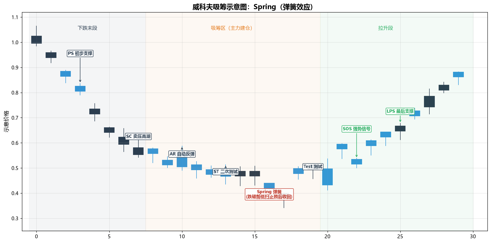
fig18威科夫吸筹 + Spring（弹簧效应）示意
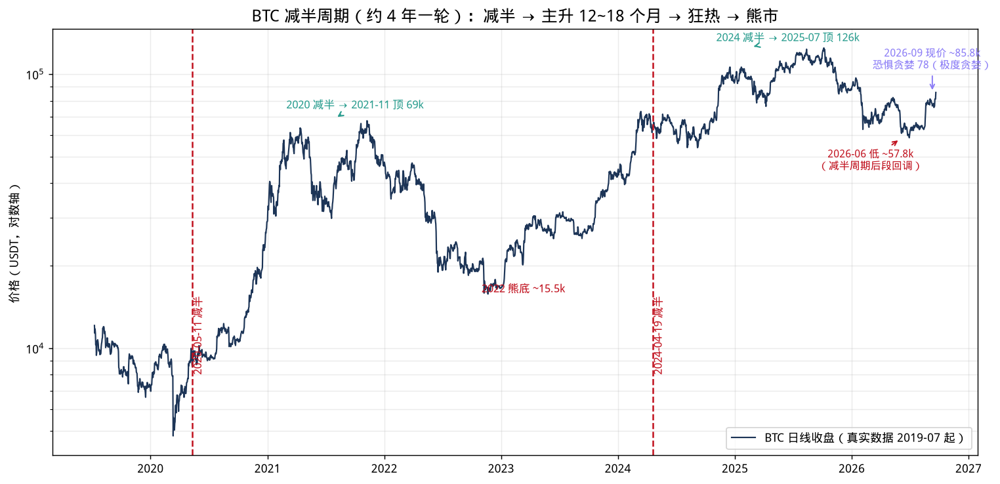
fig19BTC 减半周期真实数据（2019-2026，两轮节奏）
03 · 交易玩法流派（完整推导版）
03 · 交易玩法流派（完整推导版）
本章解决什么问题：所有打法都号称赚钱，我该选哪个？每种打法的数学结构是什么？为什么"突破后要等回踩"？为什么马丁必死？ 目标：每个流派都讲透三件事——数学结构（为什么这样设计）、关键规则（为什么是这个数）、反面案例（不这么做会怎样）。 配套图：fig11_money_management.png（三种资金管理曲线对比）
0. 先建立框架：任何打法 = 四个旋钮入场逻辑 × 出场逻辑 × 仓位管理 × 时间尺度
没有"最好的打法"，只有"和你性格/时间/风险承受力匹配的打法"。而所有打法的盈亏都由同一个公式决定（04 章完整推导过）：EV（以 R 计）= p × RR − (1−p) − 手续费 EV > 0 ⟺ p > 保本胜率 p* = (1 + 2t/s)/(1 + RR)
两种利润来源（这是理解所有流派的钥匙）： - 高胜率小盈利：p 高（60%+）、RR 小（0.5-1.5）。风险：手续费抬门槛 + 一次大亏顶多次小赚。 - 低胜率大盈利：p 低（30-40%）、RR 大（3+）。风险：连亏很长、回撤深、心理煎熬。
每个流派就是在这两个极端之间取一个点。选流派 = 选你愿意承受哪种风险的分布。
1. 日内/超短（1m-15m）：高胜率小盈亏比
1.1 数学结构
持仓分钟-小时，止损窄（0.05-0.3%）、止盈近、靠 60-70% 胜率取胜。
为什么日内胜率看起来高：出场快，小盈利频繁落袋；但这是"看起来"——保本胜率也被手续费抬到极高（04 章 7.4 节完整推导）：止损 0.1%、RR 1:1、taker 双边 0.154%： p = (1 + 0.154/0.1)/2 = 127% —— 数学上不可能赚钱 maker（双边 0.04%）：p = (1+0.4)/2 = 70%
账（胜率 60% 照样亏）：taker：赢 −0.054% / 输 −0.254% → EV = −0.134%/笔 → 100 笔 −13.4% maker：赢 +0.06% / 输 −0.14% → EV = −0.02%/笔 → 100 笔 −2%（还是亏）
1.2 关键规则：日内只有 maker + 高胜率才可能活
推导：保本胜率 p= (1+2t/s)/(1+RR)。日内 s 极小 → 2t/s 巨大 → p逼近或超过 100%。唯一出路：t 极小（maker）+ 胜率极高（>70%）+ RR 略大于 1。
边界： - 可以玩：你的交易所费率是 maker（65%）、且你接受高频盯盘。 - 绝对不能：taker 下单做窄止损日内——手续费就吃掉你全部 edge（上面的账）。 - 变通：把止损放宽到 0.5-1%（变成波段，见 2 节），2t/s 立刻从 1.54 降到 0.15-0.31，p* 回到 50-58%。
1.3 反面案例（具体数字）
你在币安 taker 做 5m 短线，止损 0.1%、止盈 0.1%（RR 1:1），每天 20 笔，胜率 60%（已经很好了）：每笔 EV = −0.134%（名义） 名义 2,000U/笔（保证金 20U @100x）→ 每笔 −2.68U 每天 20 笔 → −53.6U；每月 22 天 → −1,179U 保证金 20U 的仓位，一个月亏掉 5,900% 保证金（手续费 + 负期望）
胜率 60% 的"高手"，一个月稳定亏光。这不是假设——04 章 7.4 的公式 + 这里的天数就是推导。
2. 波段（1H-4H）：均衡型，大多数人的甜蜜点
2.1 数学结构
持仓数小时-数天，止损 0.5-2%，RR 1.5-3，胜率 40-55%。
为什么这是甜蜜点：止损放宽到 1% 后，手续费占比骤降：止损 1%、RR 1:1、taker 双边 0.154%：p = (1+0.154)/2 = 57.7% 止损 1%、RR 1:2、taker：p = (1+0.154)/3 = 38.5% 止损 3.65%、RR 1:1.55（08 章案例）：p* = (1+0.154/3.65)/2.55 = 40.9%
波段让你第一次拥有"手续费可以忽略"的奢侈——p* 只比理论值 1/(1+RR) 高 1-4 个点，而不是日内那种 +27 个点。
2.2 关键规则：突破后等回踩再进（完整推导）
规则：突破前高/阻力后，不追突破，等价格回踩突破位再入场。
为什么——三段推导：
① 止损距离的账（同一笔行情，2026-09-18~21 真实数据：BTC 从 78,027 涨到 85,877，+10%）：
设突破 80,000，结构止损放突破前低 78,800，止盈 84,000：追突破：80,200 进场 止损距离 = (80,200−78,800)/80,200 = 1.75% 盈利距离 = 84,000−80,200 = 3,800 → RR = 3,800/1,400 = 2.71 回踩：79,500 进场（同一个止损位！） 止损距离 = (79,500−78,800)/79,500 = 0.88% 盈利距离 = 84,000−79,500 = 4,500 → RR = 4,500/700 = 6.43
同样的结构止损，回踩入场让 RR 从 2.71 翻到 6.43——因为入场价更好，止损距离更短。
② 仓位的账（风险固定法，04 章 5.4：名义 = 账户×风险%÷止损距离）：
账户 10,000U、风险 1%（100U）：追进：名义 = 100/1.75% = 5,714U → 到 84,000 盈利 = 5,714×4.74% = 271U 回踩：名义 = 100/0.88% = 11,364U → 到 84,000 盈利 = 11,364×5.66% = 643U
同样风险 1%、同样止损位、同样目标，回踩利润是追突破的 2.4 倍。
③ 风险的账：追突破还有两个隐形代价——(a) 突破瞬间滑点大（市价单吃单边）；(b) 插针假突破（08 章案例：2026-09-03 突破 79,000 插到 82,248 后跌回 80,000 下方，追突破的人买在 82,000+，之后跌到 74,910，−8.6% 且不止损就是深度套牢）。回踩入场如果插针，你还没进场（或止损更近），损失可控。
完整结论：回踩入场 = 更好的价格 → 更短的止损 → 更大的仓位（风险不变）→ 更高的 RR → 更高的 EV。这不是"感觉"，是三个公式叠出来的。
边界（什么时候可以不等回踩）： - 强势单边（如 2020-12 突破 20,000 后连续阳线）：价格可能永远不回踩，等回踩 = 踏空整段趋势。 - 解决：不是"等回踩 or 追"二选一，而是加一个确认条件——突破后回踩不破突破位（2-3 根 K 线）就进；或者突破 + 1 根收盘确认后直接进但仓位减半（风险不变、止损放宽到结构位）。 - 绝对不能追：突破后已经走了 3R 以上还在追——止损距离过大、RR 严重恶化，即使方向对也赚不到钱。因为价格已经远离结构位，你的止损只能放得极远（或放在毫无意义的位置），实际盈亏比被压到 1:1 甚至更低，一旦回调就被扫出局——这等于把"低胜率大盈利"做成了"小赚多次、一次大亏还倒贴手续费"。
3. 趋势跟踪（4H-1D）：低胜率大盈亏比
3.1 数学结构
持仓数天-数周，止损宽（2-5%）、RR 3-5+、胜率 30-40%。
为什么这是"低胜率大盈利"的极端：见 0 节框架——你主动放弃胜率（忍受大量小亏），换取单次盈利足够大（一笔顶 5-10 笔亏损）。保本胜率 p* = 1/(1+RR)：RR=3 → 25%，RR=5 → 16.7%（04 章 1.2 表）；BTC 趋势信号回测胜率 30-40%，只要 RR ≥ 3 就过保本线。
为什么手续费在这里不是主要敌人：止损 2-5% 很宽，2t/s = 0.154%/3% ≈ 0.05，p 只比理论值高 1-2 个点——和波段一样享受"手续费可忽略"的奢侈（对比 1.1 节日内账：那里止损 0.1%，p 被抬到 127%，数学上不可能赚钱）。
3.2 关键规则 1：先量胜率，再定 RR 下限
规则：不要先拍脑袋定 RR，而是先回测量出你的策略真实胜率 p，再倒推你必须接受的最小 RR。
推导公式：由 EV = p×RR − (1−p) − 手续费项 > 0（留 margin 作安全垫，建议 ≥0.1R），解出 RR 下限： RR 下限 = (1−p)/(p − margin) （margin 建议 ≥0.1，即要求期望利润比手续费滑点高出至少 0.1R 才值得动手。）
数字例子： - 胜率 45%（程序化验证过）：RR 下限 = (1−0.45)/(0.45−0.1) = 0.55/0.35 ≈ 1.6 → 实操取 RR ≥ 2； - 胜率 30%：RR 下限 = (1−0.30)/(0.30−0.1) = 0.70/0.20 = 3.5 → 实操取 RR ≥ 4。
为什么是"先胜率后 RR"而不是反过来：胜率是你策略在市场中已经固定的统计属性（由入场逻辑、品种、周期决定，短期改不了）；而 RR 是你可以主动选择的参数（止损放多远、止盈看到哪）。先固定那个改不了的，再倒推那个能选的——这是数学上唯一自洽的顺序。反过来先定 RR=1:1 再去祈祷胜率够高，等于在赌一个你根本没测过的数。
3.3 关键规则 2：宽止损（ATR 1.5-2 倍）——为什么不能收窄
直觉：趋势跟踪的止损要过滤"正常波动"，不然会被洗出去。
推导（用 ATR 说话）：设 1D ATR = 3%（BTC 常态）。止损放 1×ATR（3%）会被单日波动扫掉——2019-2026 六年真实数据里，单日 high-to-low 超过 18% 的日子就有 10 天（2020-03-12 振幅 44.2%、2021-05-19 振幅 33.5% 都在列），普通日也有 2-5% 振幅。
结论（为什么不能收窄）：止损要设 1.5-2×ATR（4.5-6%）才能覆盖绝大多数正常波动而不被洗出——这就是趋势跟踪止损不能收窄的原因。因为窄止损看似"单笔风险小"，实际是把正常噪音当成趋势反转：你会被反复扫止损，然后眼睁睁看着价格按原方向走出去（被洗在起涨/起跌点），累积下来比一次性宽止损亏得更多、心理更崩。
3.4 趋势跟踪的回撤账（为什么 30% 回撤是"正常呼吸"）
趋势跟踪胜率只有 30-40%，连亏是结构性常态（不是你操作错了）。用单笔风险 2% 算连亏账：
连亏 5 笔（单笔风险 2%）：0.98^5 = 90.4%（亏 9.6%） 连亏 9 笔（p=35% 时概率 = 0.65^9 = 2.1%）：0.98^9 = 83.4%（亏 16.6%） 加上期间的小赚小亏波动 → 账户 20-40% 回撤是趋势跟踪的"正常呼吸"
结论：选趋势跟踪前先问自己——账户回撤 30% 时你还能按规则加仓/持仓吗？不能 = 别选（你会手动砍在最低点，把"低胜率大盈利"变成"低胜率大亏损"）。
3.5 反面案例（抄底趋势跟踪，真实数据）
2025-07 BTC 见顶 126k（本地数据），此后下跌。趋势跟踪者在 2025 年底"突破"追多或"抄底"：2025-07 顶 126,174 → 2026-06 低 57,800（−54%） 如果 100,000 附近追多、止损 10%（宽止损趋势单）： 第一次止损：−10% 出局 ✓（趋势跟踪的正常亏损） 如果不设止损/网格硬扛（把趋势跟踪做成扛单）： 浮亏最高 −54%：10,000U 账户亏 5,400U 需要赚 (1/0.46 − 1) = 117% 才回本（04 章回撤恢复表）
正确的趋势跟踪：每笔止损 10%（风险 2% → 仓位 20% 名义），连亏 3 笔 = 亏 6% 本金，然后等下一个信号。错误的"趋势跟踪"：不止损，把 10R 的亏损扛成 50R——一次就毁掉策略的整个期望值结构（04 章 7.1 扛单账）。
4. 网格/马丁/系统化：自动策略的数学陷阱
4.1 网格：震荡赚钱、单边亏（推导）
网格逻辑：在价格区间内设等距买单/卖单，每次成交赚一个格子价差。本质是卖波动率：波动越大、来回穿越越多，赚得越多。
为什么震荡赚钱：价格在网格区间内来回 → 每次穿越都成交一对买卖 → 稳定赚价差。
为什么单边亏：价格一路下跌 → 只触发买单不触发卖单 → 不断买入浮亏扩大，直到资金耗尽或价格离开网格下沿。
具体账（真实数据：2026-02-05 单日 −14.0%，开 73,146 → 低 62,242）：网格设置：73,000 起始、2% 间距、每格买 2,000U、下沿 60,000 单日下跌 −15%：触发 8 格买入（73,000→62,242，价格依次触发 73k/71.5k/70.1k/68.7k/67.3k/66k/64.7k/63.4k） 买入总额 = 8 × 2,000 = 16,000U，平均成本 ≈ 68,100（8 价位算术平均；等额 USD 实为调和均值≈67,940，差异<0.3%） 当日浮亏 ≈ (68,100−62,242)/68,100 ≈ 8.6% → 约 −1,376U 如果网格没设下沿/止损，2026-06 跌到 57,800： 触发 12 格买入 24,000U，平均成本 ≈ 65,500，浮亏 ≈ 11.7% → 约 −2,800U，且 24,000U 资金全部被占
再看 2021-04~2022-11 的极端版：网格从 64,000 起（2021-04 附近），BTC 最终跌到 15,476（−76%）——没有下沿的网格在单边熊市里就是无底洞（触发 60+ 格，浮亏 50%+）。
边界：网格可以活，条件是——①只在确认的震荡区间内开（03b 章道氏：1D 无趋势）；②设总风险上限（最多买入金额/最大浮亏，到线平仓离场）；③不用杠杆或用低杠杆（网格 + 杠杆 = 下跌时同时爆仓，死最快）；④接受"区间被突破 = 策略失效"。
规则："网格是震荡市工具，不是稳定收益机器"——依据就是上面的单边账。
4.2 马丁格尔：数学上必死（完整推导）
马丁逻辑：连亏就加倍下注，赢一把把前面全赚回来。听着完美，账算完就露馅。
推导 1：下注序列是指数。首单 B，每次翻倍：B, 2B, 4B, …, 2^(n−1)B。连亏 n 次累计下注：累计 = B(1 + 2 + 4 + ... + 2^(n−1)) = B(2^n − 1) 第 n 次下注 = 2^(n−1)B
推导 2：资金约束。本金 1,000U、首单 10U：第 6 次连亏：累计 630U，第 7 次需要 640U > 剩余 370U → 爆 也就是说：本金 1,000U 的马丁，最多扛 6 次连亏
推导 3：连亏 7 次有多大概率？即便单笔胜率高达 50%（这已经很乐观了），连亏 7 次的概率 = 0.5^7 ≈ 0.78%。单次看着不起眼，但你不可能只交易几轮——做 1,000 笔交易时，至少遇到一次连亏 7 次的概率 ≈ 1−(1−0.0078)^993 ≈ 99.9%。因为下注是指数增长（推导1）、第 7 次就爆仓（推导2），所以连亏到爆仓是时间问题，不是概率问题——这就是马丁格尔数学上必死的完整闭环。
思考题答案
- 该策略 p=45%、RR=2 → EV = 0.45×2 − 0.55 − 手续费项 ≈ +0.35R/笔（正期望）。注意：表面胜率50%扣掉手续费滑点后真实胜率约45%，不能只看名义胜率。
- 追进：止损 1.75%、RR = 3800/1400 = 2.71；回踩：止损 0.88%、RR = 4500/700 = 6.43。同样风险 1% 下利润差 2.4 倍。
- 累计 = 5(2^n−1) ≤ 500 → 2^n ≤ 101 → n = 6（第 6 次连亏后累计 315U，剩余 185U，第 7 次需要 320U → 爆）。连亏 7 次概率 = 0.55^7 = 1.5%；做 1,000 笔出现概率 ≈ 1−(1−0.015)^994 ≈ 99.99%。
- 排除日内（盯盘不够）和 taker 高频（1.2 节数学必死）。剩下波段/趋势跟踪/系统化。
- 支持"不烂"：EV = 0.30×RR − 0.70。RR 3 → EV = +0.20R；RR 5 → +0.80R。胜率 30% 只要 RR 足够大就是正期望——前提是你承受得了 3.4 节说的回撤。
新手最常踩的坑
- [ ] 我是不是在模仿一个我根本没条件复制的打法（盯盘时间/资金量/手续费级别）？
- [ ] 我有没有给每个候选玩法算过 EV 和保本胜率？
- [ ] 我追突破前，算过止损距离和 RR 吗？（没算 = 别追，先等回踩）
- [ ] 我是不是一个月换了 3 种打法？（是 = 每种都没到 200 笔样本）
- [ ] 我有没有认真回答过"我的 edge 是什么"？（答不出 = 随机入场）
📊 本章配图（大图 / 全景，可点击放大）
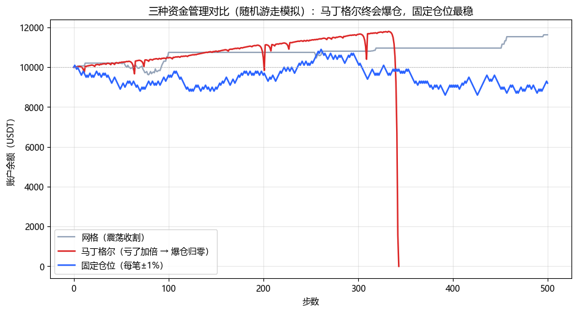
fig11网格 vs 马丁 vs 固定仓位资金曲线
04 · 盈亏比·仓位·杠杆·期望值
04 · 盈亏比 · 仓位 · 杠杆 · 期望值（完整推导版）
本章解决什么问题：为什么你"胜率 60%"还在亏钱？为什么"不会爆仓"的账户还是归零了？为什么单笔风险不能超过 2%？ 这章是整本手册的心脏：每一个规则都能从公式推导出来，推导不出来的一律标注为"经验值+依据"。配套图：fig05_breakeven_winrate.png、fig06_liquidation_distance.png、fig07_fee_vs_leverage.png、fig08_compounding.png、fig09_drawdown_recovery.png、fig10_expectancy_heatmap.png、fig13_100x_random_sim.png
0. 全章地图：这章回答四个问题
| 问题 | 对应章节 | 核心公式 |
|---|---|---|
| 我的打法长期是赚是亏？ | 1-2 节 | 期望值 EV = p·W − q·L − f |
| 手续费/盈亏比要求我至少赢多少？ | 2 节 | 保本胜率 p* = (1+2t/s) ÷ (1+RR) |
| 每笔最多下多少注？ | 3-4 节 | 凯利 f* = (bp−q)/b，再打折到 1-2% |
| 我的单子离归零多远？ | 5 节 | 爆仓距离 = 1/杠杆 − 维持保证金率 − 费率 |
阅读承诺：下面每个"为什么"都会给推导。凡是给不出推导的，我会明确写"这是经验值，依据是……"。
1. 期望值：完整推导（EV 是唯一判官）
1.1 从单笔交易的"分布"推导
把一笔交易的结果看成随机变量 X。它只有两种结果（先忽略手续费和滑点）： - 盈利 W，发生的概率 p（你的真实胜率） - 亏损 L，发生的概率 q = 1 − p
数学期望的定义：把所有可能结果按概率加权平均：E[X] = p × W + q × (−L) = pW − qL
为什么"平均"有意义：大数定律说——独立重复 N 笔，N 笔的平均结果会收敛到 E[X]。N 越大，实际平均越接近期望值。所以 EV 是"你长期每笔平均能赚多少"，和单笔运气无关。
加回成本：每笔还要付手续费 f（开仓+平仓），无论赢亏都付：EV = p(W − f) + q(−L − f) = pW − qL − f
实例：胜率 40%、平均盈利 600U、平均亏损 300U、每笔手续费 20U：EV = 0.4×600 − 0.6×300 − 20 = 240 − 180 − 20 = +40U/笔
每 100 笔期望 +4,000U——但注意：这不是"每 100 笔一定赚 4,000"，而是长期平均。100 笔的波动（标准差）大约 √100 × 单笔波动，所以 100 笔的实际结果可能在 ±几千 U 范围。样本越少，运气成分越大——这就是 06 章"至少 200 笔"的数学根源。
1.2 用 R（风险单位）简化：为什么胜率不是一切
设每笔亏损 = 1R（你的止损金额），盈利 = RR×1R（RR 是盈亏比）。忽略手续费：EV（以 R 计）= p×RR − (1−p)×1 = p(RR+1) − 1
EV > 0 的条件：p > 1/(1+RR)。
画成表（这就是 fig05 的横线）：
| 盈亏比 RR | 保本胜率 1/(1+RR) | 说明 |
|---|---|---|
| 1:0.5 | 66.7% | 小止盈，需要极高胜率 |
| 1:1 | 50% | 五五开 |
| 1:2 | 33.3% | 典型波段 |
| 1:3 | 25% | 典型趋势跟踪 |
| 1:5 | 16.7% | 宽止损趋势 |
这就是"盈亏比至少 2:1"这个经验法则的来源（依据在后面 2.2 节完整推导）：大多数裸K/技术信号的真实胜率落在 30-55% 区间（本手册 SMC 回测：趋势信号 30-40%、入场信号 40-55%），要 p > 1/(1+RR) 成立，RR 至少要在 1.5-3 之间。RR 1:1 需要 50% 胜率——不是不可能，但你的真实胜率必须稳定超过 50%，且手续费还要再抬高门槛（下一节）。
反例数字：胜率 65%、RR 0.5、每笔手续费 0.15R（高频小止盈常见结构）：EV = 0.65×0.5 − 0.35×1 − 0.15 = 0.325 − 0.35 − 0.15 = −0.175R/笔（亏！）
胜率 65% 照样亏——"命中率游戏"是错觉，EV 才是判官。
2. 保本胜率：手续费如何抬高门槛（完整推导）
2.1 推导过程
设：止损距离 = s（占名义价值的比例，如 0.3%），盈亏比 = RR（止盈距离/止损距离），双边手续费率 = 2t（taker 约 0.154%，maker 约 0.04%）。
每笔结果（按名义价值的比例）： - 赢：+RR×s − 2t - 输：−s − 2t
令 EV = 0（保本），求胜率 p：p(RR×s − 2t) − (1−p)(s + 2t) = 0 p·RR·s − 2pt − s − 2t + ps + 2pt = 0 p·s(RR + 1) = s + 2t p* = (s + 2t) / (s(RR+1)) = (1 + 2t/s) / (1 + RR)
关键洞察：保本胜率由三件事决定——手续费占止损的比例（2t/s）、盈亏比（RR）。止损越窄，2t/s 越大，保本胜率被抬得越高。
2.2 数字验证（真实参数）
taker 双边 0.154%，止损 0.3%（100x 下常见窄止损）：2t/s = 0.154% / 0.3% = 0.513 RR 1:1 → p = 1.513/2 = 75.7% RR 1:3 → p = 1.513/4 = 37.8% RR 1:5 → p* = 1.513/6 = 25.2%
对比 BTC 5m 随机入场实测胜率：RR1:1 ≈ 47.7%、RR1:3 ≈ 23.9%——全部低于保本线。这就是"随机入场必死"的数学：不是输在方向，是输在手续费抬高的门槛。
所以"盈亏比至少 2:1"的完整推导是： - 先有真实胜率分布：技术信号普遍 30-55%（依据：本手册 SMC 回测 + 行业文献惯例）； - 保本线 p = (1+2t/s)/(1+RR)，手续费再往上抬； - 要 p > p：RR = 1 时要求 p在 50%+（手续费后更高），只有极少数人有稳定 >55% 的胜率；RR = 2 时 p ≈ 33-38%，落在大多数策略的胜率区间内。 - 结论：RR ≥ 2 是"让大多数策略从数学上可能赚钱"的最小要求——这是经验法则，依据就是上面这条推导链。
边界（什么时候可以 RR < 2）：①真实胜率稳定 >60% 且手续费占比低（maker）→ RR 1:1 可能正 EV；②高频做市策略（非散户可复制）；除此之外 RR ≥ 2 是数学底线。为什么"除此之外都不行"：散户真实胜率极少稳定超过 55%，叠加 taker 手续费把 p 抬到 75%+（2.1 推导），RR=1:1 的保本线数学上长期不可能越过。 - 高频小止损 + taker → 数学上基本无解（见 03 章 1.1 节日内账：p=127%）； - 趋势跟踪 → RR 至少要 3，因为胜率只有 30-40%（03 章 3.2：RR 下限 = (1−p)/(p−margin)，p=30% → RR≥3.5 取 4）。
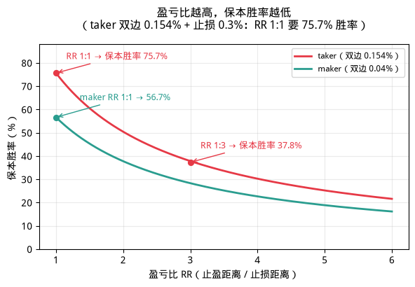
看这条红色曲线：taker + 0.3% 窄止损，RR 1:1 需要 75.7% 的胜率才保本；把盈亏比拉到 1:3，门槛降到 37.8%。公式推导见 2.1，这张图是公式的直观形状——盈亏比是你唯一能主动抬高的杠杆。
2.3 手续费占保证金：杠杆是放大镜，成本也被放大（完整账）
手续费按名义价值收。名义 = 保证金 × 杠杆：每笔手续费 = 名义 × 双边费率 = 保证金 × 杠杆 × 0.154% 100x 时 = 保证金的 15.4%（每开平一次）
算账：100x、保证金 1,000U、止损 1R = 名义 0.3% = 300U。一次开平： - 手续费 = 100,000 × 0.154% = 154U = 保证金的 15.4% - 1R 止损 = 300U = 保证金的 30% - 手续费 ≈ 0.51 个 R：你每笔的实际成本是 1R 止损 + 0.51R 手续费。
这意味着：即使你"猜对方向"（赢 1R），扣掉手续费后净赚只有 0.49R；而输 1R 时实际亏 1.51R。胜率 60% 也救不回来（60%×0.49 − 40%×1.51 = 0.294 − 0.604 = −0.31R/笔）。
3. 凯利公式：完整推导，以及为什么"单笔风险 1-2%"
3.1 推导（对数财富最大化）
问题：胜率 p、净赔率 b（盈亏比 RR）的游戏，每次下注本金的 f 比例，长期怎么下注增长最快？
先排除错误目标：如果目标是"每笔平均收益最大"，答案是 100% 全押——但全押连亏一次就归零。凯利的洞见是：目标是最大化长期复利增长率 g = E[ln(1+r)]，其中 r 是每笔的资金变化率。
单笔结果： - 赢：资金 ×(1 + b·f) - 亏：资金 ×(1 − f)
对数期望（为什么用 ln：因为 N 笔后的资金 = 本金 × ∏(1+ri)，取对数后变成求和，N 笔平均对数增长 = E[ln(1+r)]，大数定律适用）：g(f) = p·ln(1 + bf) + q·ln(1 − f)
对 f 求导，令导数为 0（求最大值）：dg/df = p·b/(1+bf) − q/(1−f) = 0 p·b·(1−f) = q·(1+bf) pb − pbf = q + qbf pb − q = f·(pb + qb) = f·b·(p+q) = f·b f* = (pb − q)/b = (bp − q)/b
每一项的含义： - b：净赔率 = 赢时赚几个 R（盈亏比）。注意 b 是"每下注 1 单位本金赢多少"，不是"价格涨多少"； - p：真实胜率； - q = 1−p：败率； - 分子 bp − q：每下注 1 单位本金的"期望净赚"（以 R 计）； - 分母 b：把"赚几个 R"换算成"下注比例"。
直觉：f是"让长期对数增长最快"的下注比例。下注低于 f：增长慢但稳；下注高于 f：增长反而变慢（波动吃掉复利）；下注 = 2f：长期增长率归零；再高：长期必亏。
3.2 数值例子（算给你看）****
| 胜率 p | 盈亏比 b | f* = (bp−q)/b | 含义 |
|---|---|---|---|
| 55% | 1.5 | (0.825−0.45)/1.5 = 25% | 不错但激进 |
| 30% | 3.0 | (0.9−0.7)/3 = 6.7% | 趋势跟踪典型 |
| 40% | 2.0 | (0.8−0.6)/2 = 10% | 波段典型 |
| 60% | 1.0 | (0.6−0.4)/1 = 20% | 高胜率小赔率 |
| 40% | 1.0 | (0.4−0.6)/1 =−20% | 负值 = 不该玩 |
最后一行最重要：凯利算出负值 = 这个赔率结构下任何仓位都是负期望，该做的是停止交易，不是找仓位。
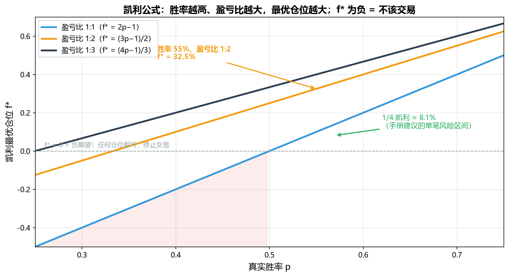
看三条曲线的斜率：盈亏比越大，曲线越陡——同样的胜率 55%，1:1 只敢下 10%，1:2 能下 32.5%（f=(2×0.55−0.45)/2=32.5%；1/4 凯利 ≈ 8.1%，仍超过手册建议的单笔风险 2% 上限——所以实战还要再砍）。凯利给的是"上限"不是"目标"：p、b 是估计值，全仓凯利 = 用真实误差赌数学理想。*
3.3 为什么不能全仓凯利（这是"单笔风险 1-2%"的完整推导）
凯利公式假设 p 和 b精确已知。现实中它们只是估计值，误差是结构性的：
① 参数误差是灾难性的。设真实胜率 55%、b=1.5，你估计成 60%：f(真实55%) = 25%，f(估计60%) = (0.9−0.4)/1.5 = 33.3%
你以为自己在 25%，实际下注 33.3%——超过了 2f* 的一半，长期增长已经显著受损。更极端：真实胜率掉到 50%（只是少 5 个点），f = (1.5×0.5−0.5)/1.5 = 16.7%——从 25% 跌到 16.7%，你以为该下 25% 实际最优只有 16.7%（已是真 f 的 1.5 倍）；真实胜率掉到 33.3% 时 f = 0——全凯利 = 站在悬崖边，参数一偏就翻车*。
② 连亏路径（用具体账证明）。凯利只保证"长期"，不保证"短期不死"。设你按 25% 下注，连亏 5 笔：0.75^5 = 23.7%——账户亏掉 76%
连亏 5 笔的概率（胜率 55%）：q^5 = 0.45^5 ≈ 1.85%。听着小，但 1,000 笔交易里至少出现一次连亏 5 笔的概率 ≈ 1 − (1−0.0185)^996 ≈接近 100%（实际约 99.99%+）。连亏必然发生，只是早晚问题。全凯利下，一次连亏序列就把你打回解放前。
③ 实践折中：1/4 凯利（quarter-Kelly）。把 f 除以 4，增长只损失约 25%，但回撤大幅缩小：典型策略 f = 6.7%~25% → 1/4 凯利 = 1.7%~6.25% 再取保守区间（参数误差 + 心理承受 + 连亏缓冲）→ 单笔风险 1-2%
结论（本手册规则，附依据）："单笔风险不超过 2%" =1/4 凯利（对典型策略）+ 参数误差缓冲 + 连亏缓冲的经验值。依据：①凯利推导（3.1）；②参数敏感性（3.3-①）；③连亏路径账（3.3-②）；④专业资金管理惯例（如《专业投机原理》《通向财务自由之路》均建议 1-2% 风险）。
边界： - 可以临时超过 2%：①小账户（<1,000U）可适当提高到 3-5%，因为绝对亏损金额小、心理影响低；②高确信度机会（三层周期共振 + 结构清晰）可临时到 3%，但连续两笔亏损后必须降回 1%。为什么"连亏两笔就降回"：连亏两笔说明当下判断节奏错了，这时加大仓位报复性翻本是爆仓前兆（04 章 7.1 扛单账），机械降回 1% 是唯一能保护本金的动作。 - 任何情况下，杠杆必须匹配止损距离，且至少留 2 倍余量（6.1 节公式）。依据：极端行情 high-to-low 可到 33.5%，普通止损 1-3% 只是"正常"波动，极端日波动是它的 10 倍以上——不留 2 倍余量，一根极端日 K 线就先爆仓、根本轮不到你的止损单成交。
5.4 仓位公式：风险固定法（止损距离定仓位）
规则：仓位大小由"最多亏多少"决定，不由"想赚多少"决定。推导：最大亏损 = 名义 × 止损距离 要求：最大亏损 = 账户 × 风险比例（1-2%） → 名义 = 账户 × 风险比例 ÷ 止损距离 保证金 = 名义 ÷ 杠杆
实例：账户 10,000U，止损 0.3%，风险 1%：名义 = 10,000 × 1% ÷ 0.3% = 33,333U（33 倍账户！） 保证金（10x）= 3,333U 最大亏损 = 33,333 × 0.3% = 100U = 账户 1% ✓
为什么止损越窄仓位越大：风险固定，止损窄 = 每单位名义的亏损小，所以能开更多名义。这是"窄止损高仓位、宽止损低仓位"的数学根据——不是鼓励窄止损，而是让"风险"这个变量保持恒定。
和凯利的关系：凯利 f 也是"亏损比例"的单位。把凯利换成仓位：名义 = 账户 × (凯利 f ÷ 止损距离)
例：f= 6.7%（1/4 凯利 1.7%）、止损 3.65% → 名义 = 10,000 × 1.7% ÷ 3.65% = 4,658U，保证金（10x）= 466U。风险固定法其实就是"用凯利当风险比例"的另一种写法。*
6. 杠杆与止损匹配：完整规则
6.1 规则推导
设你的止损距离 = s（结构止损，08 章）。要保证"先止损、后爆仓"：爆仓距离 ≥ s × 安全余量（建议 2 倍） 1/L − mmr − fee ≥ 2s L ≤ 1 / (2s + mmr + fee)
数字表（mmr = 0.4%，fee 双边 0.154%）：
| 止损距离 s | 杠杆上限 L ≤ 1/(2s+0.0055) | 取整 |
|---|---|---|
| 0.45% | 1/(0.0145) = 69x | 50x |
| 1.0% | 1/(0.0255) = 39.2x | 25x |
| 2.0% | 1/(0.0455) = 22.0x | 20x |
| 3.0% | 1/(0.0655) = 15.3x | 10x |
| 3.65%（08 章案例） | 1/(0.0785) = 12.7x | 10x |
| 5.0% | 1/(0.1055) = 9.5x | 5x |
08 章案例验证（笔算题答案）： 1. 止损 3.65%、10x → 爆仓距离 9.5% = 2.6 倍止损，在 2 倍余量线上 ✓。 2. 若用 25x → 爆仓距离 3.5% < 止损 3.65%，会先爆仓而非止损——所以本案例用 10x 不用 25x。 3. f = (2×0.55 − 0.45)/2 = 0.325 = 32.5%；1/4 凯利 = 8.1%。真实胜率 50% 时 f = (2×0.5−0.5)/2 = 25%——你以为 32.5% 实际 25%，超下注 30%，长期增长受损；若真实胜率 45%（−10 个点），f = (0.9−0.55)/2 = 17.5%——实际下注是全凯利的 1.86 倍，接近"2f 增长率归零"的危险区。 4. 双边费 = 2×0.077% = 0.154%；距离 = 4% − 0.4% − 0.154% = 3.446%；爆仓价 = 60,000×(1−0.03446) = 57,932。 5. 名义 = 8,000×1.5% ÷ 2% = 6,000U；保证金 = 600U；最大亏损 = 120U = 账户 1.5% ✓。 6. L ≤ 1/(2×2% + 0.4% + 0.154%) = 1/0.04554 = 21.9 → 取 20x。 7. 0.9^10 = 0.349 → 剩 34.9%，回本需要 1/0.349 − 1 = 186.4%。
新手最常踩的坑
- [ ] 我开单前 30 秒能算出这笔的 EV 和保本胜率吗？（不能 = 不许开单）
- [ ] 我的单笔风险是用公式算的（1-2%），还是拍脑袋的？
- [ ] 我的止损距离和杠杆匹配吗（爆仓距离 ≥ 2×止损）？
- [ ] 我有没有把手续费按"名义价值"算过一遍？（不是按保证金）
- [ ] 我是不是把杠杆当成了"胜率放大器"？（它是死亡放大器，5.3 节）
📊 本章配图（大图 / 全景，可点击放大）
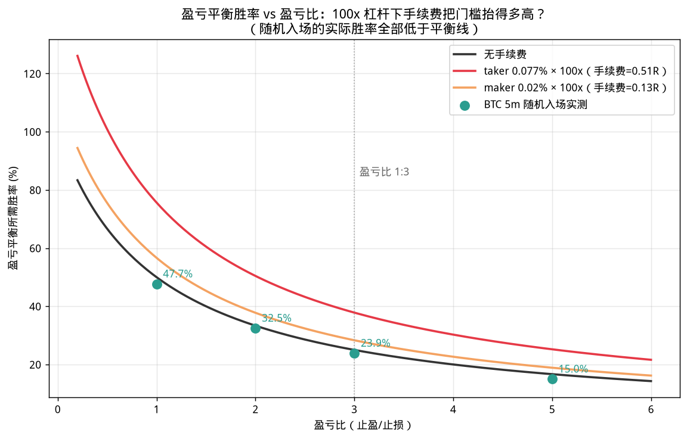
fig05盈亏平衡胜率 vs 盈亏比（含手续费/实测点）
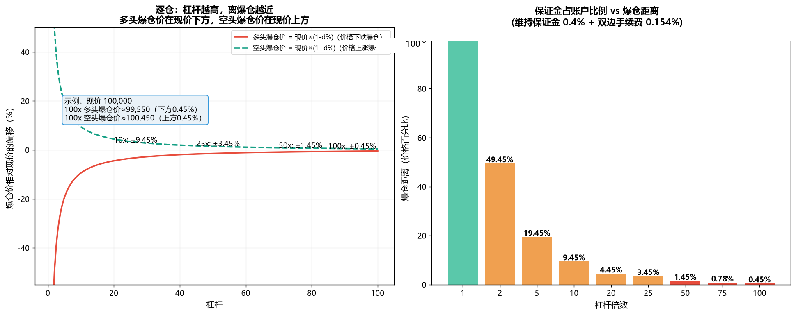
fig06逐仓 vs 全仓爆仓距离
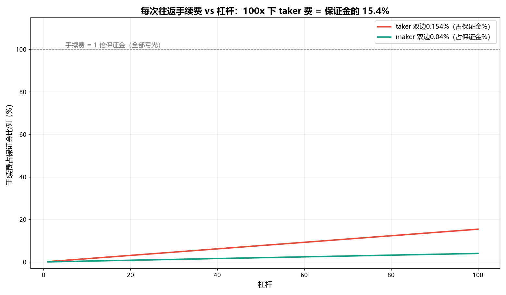
fig07手续费占保证金比例
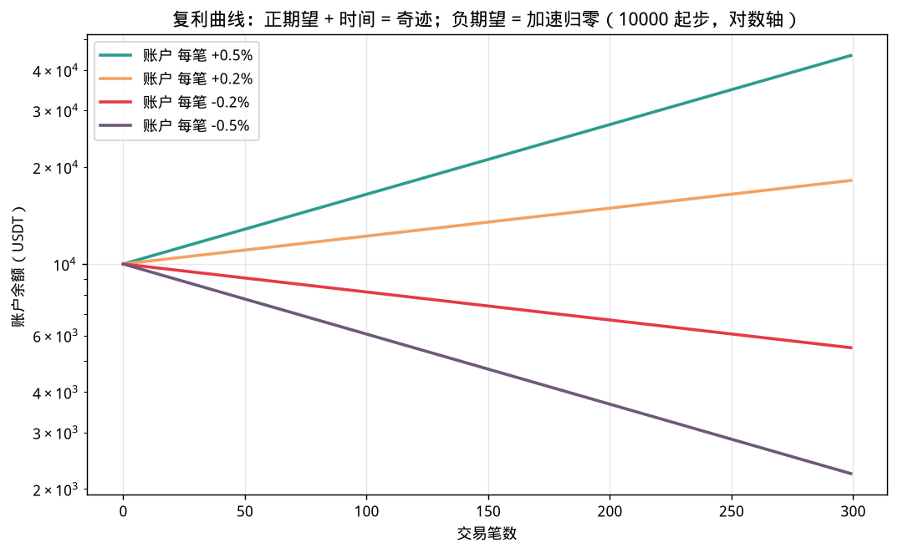
fig08复利曲线
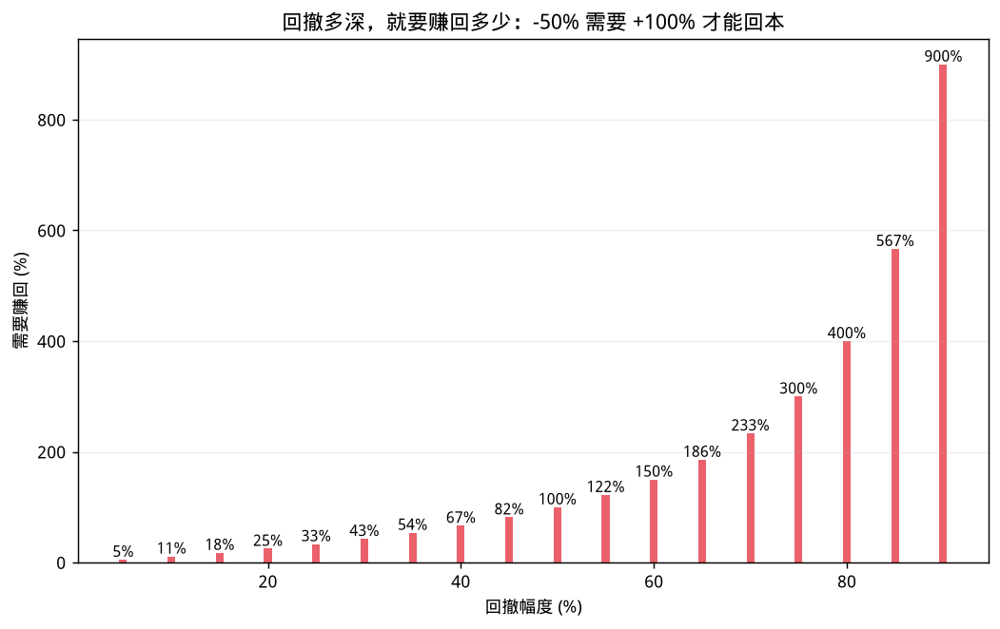
fig09回撤恢复率
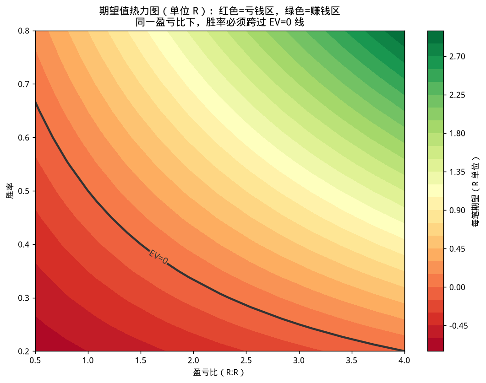
fig10期望值热力图（EV=0 线）
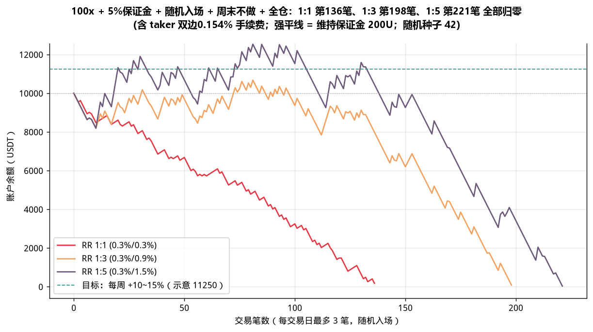
fig13100x随机入场实战模拟（136/198/221 笔归零曲线）
05 · 加密合约特有机制（自学版）
05 · 加密合约特有机制（自学版）
本章解决什么问题：为什么 BTC 现货赚了钱，合约却亏了？资金费率、爆仓引擎、插针——这些"现货没有的机制"才是合约的胜负手。 配套图：figures/fig06_liquidation_distance.png、figures/fig07_fee_vs_leverage.png（图里把"爆仓距离随杠杆压缩"和"手续费占保证金比例"画出来，下面公式对着图看）
1. 直觉理解（一句话本质）
合约 = 现货 × 杠杆 ×（手续费 + 资金费 + 爆仓引擎 + 插针）。后三者是合约特有的"隐形税"，你不懂它们，赢的钱会被悄悄收走。
2. 数学/逻辑（四个机制的算法）
2.1 资金费率（Funding Rate）
- 每 8 小时（Binance：00:00 / 08:00 / 16:00 UTC）结算一次：多头付空头 / 空头付多头。正费率 = 多头付钱给空头（合约价高于现货、多头拥挤）；负费率 = 空头付钱给多头。
- 为什么存在：永续合约没有到期日，不像期货那样到期强制收敛现货，所以必须靠资金费率人为锚定。它是"价格锚定机制"的税收形式。
- 为什么它真的能把合约价拉回现货（完整因果链）：合约价被买高 → 多头拥挤 → 资金费率转正比变正 → 多头每 8 小时被额外收一笔"持仓税" → 多头的持仓成本上升、持有意愿下降 → 部分多头获利了结或不再开新多 → 买盘减弱 → 合约价向现货回落；反之合约被砸低、空头拥挤时费率转负，空头补贴多头，抬高做空成本，阻止合约价继续低于现货。因为费率直接从拥挤的那一边收钱、补贴拥挤的另一边，所以它是一个负反馈调节器——哪边挤就惩罚哪边，价格就被推回中间。 这就是为什么"极端正费率 = 多头拥挤"不只是情绪信号，而是有真金白银在持续流出。
- 定价推导（简化）：费率 ≈ 利率 + 溢价（Binance 利率基准固定 0.01%/8h，溢价 = (标记价 − 现货价)/标记价）。多空失衡越大、合约偏离现货越远，溢价越高、费率越高（Binance 具体公式为利率 + 溢价，利率基准 0.01%）。所以"极端正费率 = 多头拥挤"有直接的定价逻辑：正费率是对多头持仓的持续收费，收费越高 = 越多多头在付钱 = 市场一边倒。
- 极端正费率（持续 >0.05-0.1%/8h）= 市场一边倒 = 过热信号，常伴随顶部（03b 章周期/情绪联动）。因为这种费率意味着多头每天被抽走大额现金，一旦价格滞涨，这些"付着高昂持仓税的多头"会最先夺路而逃，形成踩踏。
- 成本推导：每天 3 次结算，费率 0.01%/8h：年化成本 = 0.01% × 3 × 365 = 10.95% ≈ 11% 持仓 30 天 = 0.01% × 90 = 0.9%（无风险成本，无论涨跌都要付）长期持仓必须算这笔账——它和手续费一样是"确定性成本"。因为资金费按名义价值（不是保证金）按日计提，方向看对但横盘的单子也在持续失血，所以它是"时间的敌人"。
2.2 爆仓引擎（Liquidation）
- 维持保证金率：10x≈0.4% 档位（Binance 按仓位大小分层，越大越严）。因为交易所要给穿仓留缓冲——你的亏损不能由交易所兜底，所以在保证金亏光之前就强制平仓，留 0.4% 给滑点和剩余风险。
- 逐仓爆仓距离 = 1/杠杆 − 维持率 − 手续费率（04 章公式④，完整推导见 04 章 5.1）。因为 1/杠杆 是你初始保证金占名义的比例（价格反向走这么多就亏完本金），再减去维持率（交易所留的缓冲）和手续费率（开平仓成本），剩下的才是你真正能扛的反向距离。
- 代入硬口径：100x 逐仓 = 1/100 − 0.4% − 0.154% = 1% − 0.4% − 0.154% = 0.446% ≈ 0.45%。这意味着 100x 逐仓的单子，价格反向走 0.45% 就爆仓——比一根正常 1H K 线的波动还小，所以 100x 只适合极窄止损、且绝不能用满。
- 为什么强平线在"维持保证金"而不是"初始保证金"：交易所允许你亏损到只剩维持保证金（不是亏完）——这样市场波动中你不会频繁被平，但一旦跌破维持线，交易所立即接管市价平仓（防止穿仓）。所以"爆仓"发生时你的保证金通常还剩 0.4%×名义，不是 0——但插针/流动性枯竭时实际成交可能远差于理论价。
- 全仓 vs 逐仓：全仓共享账户保证金（更"抗揍"但所有仓一起死），逐仓隔离（单仓爆了不连累其他）。
2.3 插针/滑点（Liquidity & Slippage）
- 插针：价格瞬间打到流动性池（止损单密集区）再弹回 = 流动性猎杀（01 章）。你的止损单就是插针的燃料。
- 滑点：大单/极端行情下成交价偏离标记价。保守估算每笔 0.01-0.05%，爆仓后追平更贵。
- 挂单（maker）vs 市价（taker）：maker 0.02%、taker 0.077%（本手册口径，双边分别为 0.04% 和 0.154%）。因为 maker 是挂单提供流动性、taker 是吃单消耗流动性，交易所奖励做市、惩罚吃单，所以 taker 比 maker 贵近 4 倍——这也是为什么高频玩法必须 maker（03 章 1.2 节完整账：taker 日内 = 保本胜率 127%，双边 0.154% 的成本把胜率门槛抬得极高）。
2.4 手续费（公式重述）
每笔往返 = 名义 × 双边费率。100x 下 taker 往返 = 保证金的 15.4%（04 章）。
3. 实战应用（机制怎么用）
- 资金费当情绪指标：正费率极高（>0.05%）+ 价格高位 = 别追多（03b 章恐惧贪婪交叉验证）。因为极端正费率意味着多头已拥挤到彼此补贴、每天被抽大额持仓税，一旦买盘断档，这批"付着高昂成本的多头"会最先夺路而逃形成踩踏，此刻追多等于接最后一棒。 边界：负费率/低费率 ≠ 底部信号（熊市可以长期负费率继续跌）；费率只是拥挤度指标，方向要等结构确认（01 章 HH/HL）。
- 止损放流动性池边缘：别把止损放得"人人可见"（前高上方 1 个点），放远一点或用 ATR，不然你就是插针的燃料。因为止损单在撮合里是可见的流动性——前高上方密集挂着的止损单就是"等着被吃"的买盘，大资金有动机先打上去扫掉再回落。 边界：也不要为了躲插针把止损放得无限远——止损距离受两个约束夹击：下限 ≥1.5-2×ATR（02 章 3.1，太窄被噪声扫）、上限 ≤ 爆仓距离÷2（04 章 6.1，太宽先爆仓）。在这两个约束之间取"逻辑失效位"（01 章 3.4）。
- 杠杆选择表（留 3 倍余量的经验规则，公式见下）：止损 1% 的单子杠杆上限约 33x（取 25x）；止损 3% 上限约 11x（取 10x）；止损 5% 上限约 6.7x（取 5x）。规则：杠杆 ≤ 1 ÷ (止损距离×3)（留 3 倍余量）。这个"3 倍"和 04 章 6.1 推导的"2 倍"是什么关系：04 章的 2 倍是数学底线（L ≤ 1/(2s+mmr+fee)，保证"先止损、后爆仓"）；这里的 3 倍是经验版本——用 1/(3s) 把维持保证金、手续费、极端行情插针/滑点全部吞进去，是更保守的实践规则。底线用 2 倍，实盘建议 3 倍：同样是止损 3.65% 的单子，2 倍规则给 12.7x，3 倍规则给 9.1x（取 10x）——08 章案例用的正是 10x。边界：表格里的 25x/10x/5x 是"满仓"上限——任何时候都不该用满（要留资金应对波动、加仓、新机会）；实际建议用上限的 1/3-1/2。
- 极端行情（数据公布/减半前后）降杠杆：波动率翻倍时，同样止损距离爆仓概率翻倍。因为爆仓距离是固定的百分比，而事件行情的 10 分钟波动可能从 0.3% 跳到 1%——你没降杠杆时，价格反向的"速度"变了但你的"缓冲距离"没变，等于把安全边际让出去了。 边界：降杠杆 ≠ 空仓——如果你确认大方向，可以降杠杆/缩仓继续持有，或干脆空仓等波动过去（取决于你的策略和心态）。
3.1 反面案例：三大机制各算一笔账
案例 A：不看资金费率的"长线扛单"（慢性失血账）
2021-2022 熊市里，有人持有多单"等回本"。假设持单 12 个月，期间平均资金费率 +0.01%/8h（牛市高位尤其高，2021-04~05 曾持续 0.05-0.1%/8h）：名义 50,000U、10x（保证金 5,000U）、持单 365 天： 资金费成本 = 50,000 × 0.01% × 3 × 365 = 5,475U/年
等等——这是费率复利，按名义价值算，不按保证金：50,000 × 0.01% = 5U/次 × 3次/天 = 15U/天 × 365 = 5,475U/年 = 名义的 10.95% =保证金的 109.5%（5,475/5,000）。扛单一年，光资金费就把保证金亏光一遍——还没算价格本身下跌。这就是"不看资金费率长期扛单 = 慢性失血"的完整账。
（注：实际牛市高位费率可到 0.05-0.1%/8h，成本再放大 5-10 倍——2021-04 持多单一个月，光资金费就烧掉名义的 4.5-9%。）
案例 B：止损卡在"结构位正上方"被插针扫掉（真实行情账）
2026-09-03（08 章完整案例）：假设你在 80,500 做多，止损精确放"前高 80,514 上方一点"= 80,550：9/3 21:00 价格插针到 82,248 后快速回落： 插针回落途中扫掉 80,550 的止损 → 你被迫离场 但之后价格跌到 74,910——你方向"看对了"（该做空）却先被扫 如果你按"逻辑失效位"（82,400 上方）放止损： 插针 82,248 没到你止损 → 你拿住单子 → 等 CHoCH 确认后反向操作 → 盈利
教训：止损精确卡在结构位 = 给流动性猎杀者送燃料（01 章 3.4 机制推导）。
案例 C：全仓模式下"一仓爆，全部爆"（联动爆仓账）
账户 10,000U，全仓模式开两仓： - 仓 1：BTC 多 5%×100x = 50,000U 名义 - 仓 2：ETH 多 5%×100x = 50,000U 名义（共 100,000U 名义）维持保证金 = 100,000 × 0.4% = 400U 爆仓距离 = (10,000 − 400)/100,000 = 9.6%
对比逐仓：仓 1 单独爆仓距离 = 0.45%（100x 逐仓 = 1/100 − 0.4% − 0.154%），仓 2 单独也 0.45%。全仓把所有仓位绑成一条船——BTC 和 ETH 同跌 10.7% 时，两仓一起爆、账户归零；逐仓下同样的行情，两仓各亏一半保证金但不会全灭。全仓的"抗揍"是把所有仓位的命绑在一起换来的——多品种必须逐仓（依据：相关性，BTC/ETH 同涨同跌，2022-06-13 一天同跌 15%+，真实数据）。
3.2 一句话总结
合约的四个隐形税（手续费/资金费/爆仓引擎/插针）每一个都有确定的算法和真实案例——它们不是"风险"，是"成本"，而成本是可以提前算清的。算不清 = 裸奔。
4. 新手误区
- ❌"合约能做空所以多空都赚"：双向交易 = 双向亏损的机会，杠杆只是放大了。
- ❌不看资金费率长期扛单：年化 11% 的成本，扛单等于慢性失血。
- ❌止损精确放在结构位正上方：那正是庄家要扫的地方。放结构位上方"足够远"（>1×ATR）。
- ❌把"全仓 19.6% 不爆"当成安全：不爆 ≠ 赚，EV 为负照样归零（04 章 fig13）。
速记卡（Anki）
- Q: 资金费率什么时候为正、谁付钱？ A: 多头占优时为正，多头付空头；极端正费率=过热信号。
- Q: taker vs maker 费率？ A: taker 单边 0.077%（双边 0.154%）、maker 单边 0.02%（双边 0.04%）——本手册口径。
- Q: 100x 下 taker 往返手续费 = 保证金多少？ A: ~15.4%。
- Q: 杠杆选择的经验规则？ A: 杠杆 ≤ 1÷(止损距离×3)。
- Q: 为什么止损别放在结构位正上方？ A: 那是止损单密集区=插针/流动性猎杀的目标。
- Q: 全仓 vs 逐仓区别？ A: 全仓共享保证金更抗揍但一起死；逐仓隔离单仓爆了不连累。
思考题（先自己想，答案在末尾）
- 你持有多单 30 天，期间资金费率平均 +0.01%/8h。光资金费就吃掉你多少 %？（不算复利）
- 你的止损离现价 0.5%，用的是 25x。价格先插针到你的止损、随后反弹到你的目标。你赚了吗？为什么？（结合插针机制）
- 为什么极端行情前要降杠杆？用波动率/爆仓距离解释。参考答案1. 30 天 = 90 次结算 × 0.01% =0.9%。看着不多，但这是无风险成本；如果持仓 1 年 = 约 11%（年化 0.01%×3×365）。 2. 没赚，你亏了。插针触发你的止损 = 成交；之后反弹跟你无关。这就是"止损被扫后行情反转"的经典剧情——你的止损正好在流动性池里。解法：止损放到 ATR 之外 + 结构位上方留余量。 3. 波动率翻倍时，同样的"距爆仓 3.5%"（25x）可能一次 10 分钟波动就触发；并且插针/滑点在极端行情放大，实际成交价更差。降杠杆 = 给同样的止损距离留 3 倍安全边际。
新手最常踩的坑
- [ ] 我持仓超过 1 天时算过资金费成本吗？
- [ ] 我的止损是不是精确卡在"人人都会放"的价位？
- [ ] 我是不是在数据公布前还开着重仓？
- [ ] 我是不是用 taker 市价单在做高频？（是 = 改 maker 挂单）
06 · 验证方法论（自学版）
06 · 验证方法论（自学版）
本章解决什么问题：你的策略"看起来"很赚钱，为什么实盘就崩？回测 100% 收益的曲线，是不是骗你的？ 目标：学会用 30 分钟写一张假设卡、用程序化回测验证、识别未来函数和过拟合。 配套图：figures/fig02_market_structure.png（回测时同样要先定义结构——结构定义不清，信号就是一笔糊涂账）
1. 直觉理解（一句话本质）
验证 = 把你的想法变成可证伪的假设，用历史数据检验，再判断"是真的还是碰巧"。大部分"策略"死在第三步——不是没赚过钱，是赚的钱经不起检验。
2. 数学/逻辑（为什么手动复盘会骗你）
- 选择性记忆：大脑自动记住赚钱的单、忘掉亏钱的单 → 你统计的胜率比真实高 10-20%。
- 前视偏差（未来函数）：你在决策时"无意中"用了未来才知道的信息（比如看到了后面的走势再画支撑线）→ 回测胜率虚高。
- 过拟合：参数调 100 次，总有一组参数在历史数据上完美（曲线拟合噪音）。样本越少、参数越多，过拟合越严重。
- 幸存者偏差：你只看到"活下来的策略"，死了 99 个你没看到。
数学上：策略的"样本内表现"几乎总是好于"样本外表现"。唯一的解药是：留出你没碰过的数据段做最终检验（OOS），并和基准（恒多/等权/随机）对比。
3. 实战应用（30 分钟验证流程）
3.1 写研究假设卡（先写卡，再写代码）假设卡（hypothesis.md）
为什么必须先写卡、再写代码：因为一旦你先动手写回测代码，大脑会不由自主地"哪里不赚钱就改哪里"——参数、信号、入场点都会在你没意识到的情况下被反复调整，最后得到的是一段被你事后优化过的代码，而不是对一个假设的检验。先把假设写成白纸黑字（市场观察→信号定义→进出规则→失败标准），等于在动手前就把"什么算成功、什么算失败"钉死，之后改任何一行都要先过这张卡。没有假设卡的回测 = 边考试边改答案。
- 市场观察：BTC 1H 假突破后（突破前高后 2 根 K 线内收回）反转概率 > 50%
- 信号定义：收盘价突破前高 → 之后 2 根 1H 收盘价跌回突破位 → 做空
- 入场/出场：T+1 开盘入场；止损 = 插针高点+ATR；止盈 = 2R
- 数据/时间：BTC 1H 2019-2026；手续费 taker 双边 0.154%；滑点 0.02%
- 基准：随机入场（同频率、同止损止盈）对比
- 失败标准：扣成本后 EV ≤ 0，或 OOS 显著差于开发段
3.2 程序化回测（防未来函数模板）df['sig'] = ... # T 日收盘后出信号（只用 T 日及之前数据）
df['entry'] = df['open'].shift(-1) # T+1 开盘成交；最后一根 dropna 丢弃 ret = (df['exit'] - df['entry']) / df['entry'] - fee*2 - slippage bench = df['close'].pct_change().sum() # 恒多基准（close→close，报告注明口径）
三条铁律：①只用当日收盘前数据出信号；②T+1 开盘成交；③扣双边手续费+滑点。 为什么这三条一条都不能让：①因为你在 T 日收盘那一刻才"看到"收盘价，用收盘后才知道的数据在 T 日下单就是偷看未来——这是最隐蔽也最致命的未来函数；②因为现实中你不可能在 T 日收盘那一瞬间以收盘价成交（收盘价是收盘瞬间的撮合结果，你下单时还不知道它），能真实成交的最近价格是 T+1 开盘价，用收盘价成交会系统性高估收益（跳空被你"免费"跳过了）；③因为手续费和滑点是每笔交易必然发生的确定性成本，0.154% 的 taker 双边费在高频策略里能把 +98% 打成 +33%（见 3.5 账 1），回测里不扣 = 自欺。
3.3 判断结果（对照基准 + 审计清单）
- 对比基准：策略 vs 恒多 vs 随机入场。赢不了随机入场 = 你的"edge"不存在。
- 样本量：至少 200 笔，否则任何胜率都不可信（95% 置信区间太宽）。因为胜率是抽样估计，样本越小估计越不准——30 笔测出的 60% 胜率，真实值可能落在 42.5%~77.5%（下面公式算给你看），横跨保本线，等于没测。
- OOS：开发段漂亮（如 4 年 +49.9%），OOS 一测就崩（2024 慢牛 −4.2%）= 过拟合经典症状（本手册 SMC 真实案例）。因为开发段数据你已经反复看过、调过参数，策略"记住"了这段历史的噪音；只有你没碰过的数据段（OOS）才能回答"它在未来能不能赚钱"——开发段的高分只证明拟合得好，不证明有效。
为什么"至少 200 笔"（置信区间推导）：胜率的抽样误差服从二项分布，95% 置信区间半宽 ≈ 1.96×√(p(1−p)/n)。设真实胜率 60%：n = 30: 半宽 ≈ 1.96×√(0.24/30) = 17.5% → 95% CI = [42.5%, 77.5%] n = 100: 半宽 ≈ 9.6% → [50.4%, 69.6%] n = 200: 半宽 ≈ 6.8% → [53.2%, 66.8%] n = 500: 半宽 ≈ 4.3% → [55.7%, 64.3%]
含义：30 笔测出的"60% 胜率"实际可能在 42.5%-77.5% 之间——保本线 50% 完全落在区间内，你根本无法判断这策略是赚是亏。200 笔把区间压到 ±6.8%，才能把"60%"和"保本 55% 附近"区分开。"200 笔"是经验值，依据就是上面的置信区间公式 + 覆盖至少 4 种市场状态（趋势/震荡/牛/熊）的要求。如果你的策略年交易量不足 200 笔，要么降低判断标准（承认不确定性），要么接受"要等更久才知道"。
3.4 本手册 SMC 回测的教训（真实数据）
- 纯规则化 SMC 策略 1x 杠杆 6 年最佳 +58%，但 OOS 2024 慢牛胜率 17% 失效；
- 100x 随机入场全灭（136~221 笔归零）；
- 结论：程序化无法复现"两年 167 倍"——那些神话大概率是选择性展示+杠杆+幸存者偏差。
3.5 三个真实数字账（为什么验证流程每条都必要）
账 1：不扣成本 = 利润幻觉（SMC 实测）
同一个策略，只改"扣不扣手续费滑点"：零成本回测：2021 +98.6%，2023 +25.7%（PF 1.28-1.31，看起来很强） 扣 0.07% 成本：2021 +33.7%（PF 1.13），2023 −7.7%
成本把 2021 年利润吃掉了 66%、把 2023 年从正变成负。你看到的所有"无成本回测曲线"都要先打三折再信。这就是 3.2 铁律③存在的理由——成本是确定性的，回测里不扣 = 自欺。
账 2：过拟合的典型曲线（参数敏感）
SMC 策略调"平台参数 mom"（多少根 K 线的平台算有效）：mom = 4：6 年 +50%+（平台区，稳定） mom = 6：+49.9%（还在平台区） mom = 14：+120%（孤峰——只是恰好拟合了某段历史） mom = 13：+40%（孤峰旁边就掉回均值）
判断规则：参数扫描图里，平台区（一片都稳定）可信，孤峰（只有一两个点高）必是过拟合。如果 A=14 给 +120% 而 A=13 只给 +40%，这个 +120% 没有任何信息量——它是噪音拟合。换 OOS 段一测就现原形（本手册 SMC：开发段漂亮的组合 OOS 2024 慢牛胜率 17% 直接失效）。
账 3：开发 vs OOS 的落差（walk-forward 的意义）
SMC v2 全配置回测：开发段 2021：+33.7%（PF 1.13）—— 好像能接受 OOS 2022：−53.1% —— 崩 OOS 2023：−7.7% —— 还是亏 OOS 2020：−36.4% —— 继续亏
"开发段好看"只证明"它在历史上拟合得好"，不证明"未来能赚"。walk-forward（滚动开发→检验）的价值就是强迫你看 OOS：任何策略交卷前必须报 OOS，否则等于没验证。
3.6 验证方法论的边界（什么时候这套流程不适用/会误导）
- 策略信号本身就是前视性的（比如用"未来 20 根 K 线后的走势"定义入场）：回测框架再严格也救不了——先检查信号定义，再谈回测（信号必须只用 T 日及以前的数据）。
- 样本太少（<30 笔）时回测结论没有统计意义：不是"策略差"，是"无法判断"——此时该做的是继续积累样本（06 章 3.3 置信区间），不是改参数。
- 市场结构剧变后（如 2024-11 后 BTC 进入新周期）：历史回测的分布可能不再适用——回测通过 ≠ 未来一定有效，这也是为什么实盘要小仓位试运行 1-3 个月（OOS 的实盘版）。
- 回测是对"历史噪音"的拟合 vs 对"真实规律"的捕捉：永远分不清？分得清——用 OOS + 平台区参数 + 换市场验证（SMC 结论里"换 XAUUSD 验证位置因子"就是这个思路）。单一市场、单一时间段的回测，可信度打五折。
- 策略失效 ≠ 回测错了：2024 慢牛 SMC 胜率 17% 是市场状态变化，不是程序 bug——区分"策略失效"和"实现错误"很重要：前者正常（市场会变），后者是你的 bug（要修）。
4. 新手误区
- ❌在回测软件里反复调参直到曲线漂亮：这就是过拟合本身。
- ❌拿 30 笔交易说"胜率 80%"：样本不够，统计上无意义。
- ❌不扣手续费/滑点：回测利润减半甚至归零是常态。
- ❌把"事后画的图"当"当时能看到的信号"：这是最隐蔽的未来函数。
速记卡（Anki）
- Q: 验证流程三要素？ A: 假设卡（先写）→ 程序化回测（防未来函数）→ 与基准对比+审计。
- Q: 防未来函数铁律？ A: T 日收盘出信号、T+1 开盘成交、扣双边费+滑点。
- Q: 样本量至少多少笔？ A: 200 笔（否则胜率统计不可信）。
- Q: 过拟合的经典症状？ A: 开发段很漂亮、OOS 崩；参数微调就大变。
- Q: 判断策略有没有 edge 的基准？ A: 恒多/等权/随机入场——赢不了随机=没有 edge。
- Q: 为什么手动复盘会骗自己？ A: 选择性记忆 + 前视偏差 + 幸存者偏差。
思考题（先自己想，答案在末尾）
- 有人给你看一个"3 个月翻 50 倍"的回测曲线。你至少该问哪三个问题？
- 你在回测里发现"参数 A=14 时 6 年 +120%，A=13 时 +40%"。这说明了什么？你会怎么处理？
- 为什么"T 日收盘价算信号 + T 日收盘价成交"是作弊？具体错在哪一步？
参考答案：
- ①扣了手续费/滑点吗？（成本后收益是多少）②样本多少笔、和基准（恒多/随机）比过吗？③有没有留 OOS 数据段？（曲线是样本内调出来的吗）——三个问题问完，90% 的"神曲线"会当场露馅。
- 说明策略对参数极敏感 =过拟合信号：A=14 只是在拟合历史噪音。处理：①拒绝使用该参数；②换独立 OOS 段验证；③如果必须选参数，选"平台区"（附近参数都稳定的值，而不是孤峰）。
- 错在成交价用了未来信息：T 日收盘价在 T 日收盘那一刻才能知道，而"按收盘价成交"意味着你假定自己能在收盘瞬间以收盘价买到——现实中收盘价成交需要 T+1 开盘（有跳空）。正确做法：信号用 T 日收盘数据，成交用 T+1 开盘价（模板里的 shift(-1)）。这看起来只差一点点，长期回测里会系统性地高估收益。
新手最常踩的坑
- [ ] 我是不是还没写假设卡就开始"试参数"了？
- [ ] 我的回测扣了双边手续费和滑点吗？
- [ ] 我的结论样本 ≥ 200 笔吗？
- [ ] 我有没有拿没见过的数据段（OOS）做过最终检验？
07 · 复盘日志：把感觉变成数据
07 · 复盘日志：把"感觉"变成"数据"（完整推导版）
本章解决什么问题：为什么同样的错误反复犯？为什么总觉得"自己判断挺准"但账户不涨？ 目标：学会一套 5 分钟复盘流程，让错误被命名、被统计、被消灭。每一个复盘维度都有公式依据，不是习惯。配套图：figures/fig14_review_template.png（复盘表格长什么样，照着这张表填）
1. 直觉理解（一句话本质）
复盘 = 数据采集。盈亏曲线只是结果，复盘表才是原因。人脑会撒谎，表格不会。能被命名的错误，才有机会被改掉。
2. 数学/逻辑（为什么复盘是"必要"不是"自律"）
2.1 复盘的数学根据：EV 公式的每个变量都需要数据
回顾 04 章的期望值公式：EV = p × W − q × L − f - p（真实胜率）：你唯一知道的 p 来源是历史交易统计。不复盘 = 你对 p 的估计完全来自记忆——而记忆有选择性偏差（只记对的）→ 你用的 p 比真实高 10-20%（06 章 2 节）→你按错误的 p 做仓位决策（凯利 f* 也错）。 - W / L（平均盈/亏）：不统计就不知道你的平均亏损是不是被"扛单"扭曲了（04 章 7.1：扛单把单笔亏损从可控变成 12.8 倍）。 - f（手续费/滑点）：复盘表记录每笔真实成交价 → 你才知道实际滑点是不是比预想大。
所以复盘不是"好习惯"，是 EV 公式的输入采集。没有输入，公式失效，所有仓位计算（04 章）都是在错误参数上运行。
2.2 为什么"复盘 5 维度"正好是这五个（映射推导）
| 复盘维度 | 对应 EV/风控公式的哪个变量 | 不记录会怎样 |
|---|---|---|
| ① 入场理由 | p 的来源（这个理由真实胜率多少） | 无法分组统计胜率，p 永远是一坨 |
| ② 止损合理 | L 的上限（最大亏损） | 止损乱放 = L 不确定 |
| ③ 仓位超标 | f*/风险 1-2%（04 章 3.3） | 违反仓位规则 = 实际风险是标称的 2-5 倍 |
| ④ 情绪干扰 | p 的隐性杀手（FOMO 单胜率通常低于统计） | 情绪单混进样本，污染 p |
| ⑤ 出场纪律 | W/L 的实现（提前平仓 = 实际 W 缩小） | 规则内 W 是 2R，实际只拿 0.5R → EV 缩水 |
五个维度恰好覆盖 EV 公式的每一个变量——这就是"为什么是这五维"的推导。少记一维 = 公式少一个输入 = 你的整个系统在残缺数据上运行。
2.3 为什么"30-50 笔才统计"（置信区间推导）
和 06 章"200 笔"同一个原理（抽样误差），但复盘是分组统计：按"入场理由"分组后每组样本更少。5 组理由 × 每组 30-50 笔 = 总 150-250 笔。每组 30 笔的胜率 95% 置信区间半宽 ≈ ±17.5%（06 章 3.3）——你不能拿 5 笔就说"这个理由不赚钱"，至少要 30 笔才值得下判断。复盘统计的最小样本：总 200 笔、单组 30 笔（经验值，依据=二项分布置信区间）。
2.4 不复盘的成本账（反面案例，算给你看）
案例：不复盘的"高手"——假设你真实胜率 40%（RR 1:1，EV = −0.2R/笔，理论上必亏），但你凭记忆觉得"自己大概 60%"：按 60% 胜率做凯利（f* = 20%，1/4 凯利 5%） 实际 40% 胜率 → 正确仓位应该是 0（EV<0 不该做） 你用 5% 风险连续亏 20 笔：0.95^20 = 35.8%（亏 64%）
如果 20 笔时就复盘统计：20 笔显示胜率 40%（置信区间 [18%, 62%]）——至少让你警觉"低于 50%"，停手检查。不复盘 = 在错误参数上跑 200 笔才被市场教育；复盘 = 20-30 笔时就自己发现。
案例：复盘五维里最常被跳过的一维（情绪）——某散户统计 100 笔：按规则入场 60 笔（胜率 55%，EV +0.1R）、FOMO 追单 40 笔（胜率 20%，EV −0.6R）：混合统计：胜率 (60×55%+40×20%)/100 = 41%，EV = −0.18R/笔 → "我水平不行" 分组统计：规则单 +0.1R，FOMO 单 −0.6R → "我该砍掉 FOMO，不是砍掉策略"
同样的数据，不复盘看是"策略没用"，复盘看是"情绪单在拖垮策略"——分组统计直接给出行动方向。这就是 3.3 节"按理由/情绪分组"的数学价值。
3. 实战应用（5 分钟复盘流程 + 5 个维度）
3.1 每笔交易后 5 分钟复盘（趁记忆新鲜）
| # | 维度 | 要问的问题 | 好复盘的标准 |
|---|---|---|---|
| 1 | 入场理由是否成立 | 结构判断对吗？计划内还是临时起意？ | 能写出一句无歧义理由（如"跌破 80,000 CHoCH 确认"），不是"感觉要跌" |
| 2 | 止损是否合理 | 放在结构外了吗？距离匹配 ATR 吗？ | 能讲出逻辑："价格回到这里=入场逻辑失效" |
| 3 | 仓位是否超 | 风险 ≤ 账户 1-2% 吗？ | 每笔风险 = 账户×1%÷止损距离（04 章 5.4），算多少下多少 |
| 4 | 情绪有没有干扰 | 是 FOMO/报复性/无聊手痒吗？ | 如实填情绪标签——和亏损的关系会在统计里现形 |
| 5 | 出场是否按计划 | 到止盈/止损就执行吗？提前平了吗？为什么？ | 偏离计划=纪律问题，比亏钱更严重 |
重点：第 5 条"提前手动平仓"是高频错误。问自己：看到新信息了，还是只是怕浮盈回吐？前者是调整，后者是情绪（会直接缩小 W，见 2.2 表）。
3.2 复盘表模板（直接复制使用）
| 日期 | 交易对 | 方向 | 入场理由 | 止损位 | 止盈位 | 仓位% | 盈亏结果 | 情绪标签 | 改进点 |
|---|---|---|---|---|---|---|---|---|---|
| 2026-09-04 | BTCUSDT | 空 | 假突破插针 82,248 + 跌破 80,000 CHoCH 确认 | 82,400 | 75,000 | 2.4% | +151U (+1.5%) | 平静→满足 | 等反弹确认再入场，正确；止损按结构放，没被扫 |
| 2026-09-10 | BTCUSDT | 多 | 看到 15m 双底就进，没等结构确认 | 76,000 | 78,500 | 5.0% | -250U (-2.5%) | FOMO/急躁 | 违反入场清单：结构未成立；仓位超 1-2% 上限 |
填写规则：入场理由必须能写成"因为 A，所以我做 B"；止损止盈写数字；仓位写保证金占账户 %；情绪标签一个词；改进点只写可执行的一句，不写"我要更自律"。因为"因为A所以B"逼你把直觉翻译成可证伪的规则——写不出理由的单子本身就是 FOMO（这一格就是最重要的发现）；而"我要更自律"这种话下次无法检验，必须改成"下次没等15分钟不开单"这种可打勾的动作。
3.3 三种复盘节奏 + 统计方法
- 每笔后（5 分钟）：填表，重点记情绪标签和当下想法。因为情绪和当时的想法是会随时间被大脑美化的——隔一周再写，你已经记不清当时是不是 FOMO 了，趁记忆新鲜记下来，统计才真实。
- 每周（30 分钟）：统计本周胜率/期望值/最大回撤，找出 1 个本周最该改的错误。因为单笔结果含大量运气，只有攒够一周的样本才能看出"这周系统状态对不对"，而每周只抓 1 个错误是为了避免贪多——一次改 5 个等于一个都改不掉。
- 每月（1 小时）：按"入场理由"和"情绪标签"分组统计（2.4 节案例），得出"我什么情况下会亏"，更新交易规则。因为分组统计能把混合在一起的胜率拆开——41% 的混合胜率里藏着 +0.1R 的规则单和 −0.6R 的 FOMO 单（2.4 节），不分组你会误砍策略而不是砍掉情绪单。
分组统计怎么做：把复盘表导出，按"入场理由"列分组算每组胜率/平均盈亏；再按"情绪标签"分组算。胜率最低/亏损最大的组 = 你的下一个改进点——这一条规则就是你的个人 edge 数据库（06 章假设卡的来源）。
3.4 复盘规则的边界
- 复盘频率不是越高越好：持仓中每 10 分钟看一次盘不算复盘（那是盯盘焦虑）；复盘是"交易结束后"的固定流程，白天做了错事晚上一起记也行。
- 复盘 ≠ 自我审判：目的是改进不是自责。记录"违反了什么规则"，不写"我怎么这么蠢"（自责会让人逃避记录 = 样本又断了）。
- 什么时候复盘会误导：样本 <30 笔就下结论（2.3 节置信区间）；把单笔结果（运气）当系统结论；只复盘亏损单不看盈利单（盈利单里混着运气，不拆开会把运气当能力）。
4. 新手误区
- ❌只复盘亏损单：盈利单更要复盘——"赚了是因为逻辑对，还是运气好？"不搞清楚会把运气当能力，然后加倍下注送回去（2.4 节：不拆开 = 混合统计误导）。
- ❌复盘变成自我审判：目的是改进不是自责。记录"违反了什么规则"，不写"我怎么这么蠢"。
- ❌记了不统计：填完不回头看=白填。每周/每月必须做汇总统计，否则复盘表只是情绪垃圾桶（2.1 节：不复盘=公式没有输入）。
速记卡（Anki）
- Q: 复盘的本质是什么？ A: 数据采集——把感觉变成数据，再把数据变成规则。
- Q: 复盘 5 维度为什么是这五个？ A: 恰好覆盖 EV = p×W − q×L − f 的每个变量（p/W/L/f + 风控）。
- Q: 入场理由写不出来的话意味着什么？ A: 当时根本没有理由——这一格就是最重要的发现。
- Q: 复盘频率三档？ A: 每笔 5 分钟、每周 30 分钟、每月 1 小时。
- Q: 为什么盈利单也要复盘？ A: 区分"逻辑对"和"运气好"，防止把运气当能力。
- Q: 分组统计最少多少笔才可信？ A: 单组 30 笔（95% 置信区间半宽 ±17.5%）。
思考题（先自己想，答案在末尾）
- 你复盘 10 笔后，发现 7 笔亏损单都标了"FOMO"。这告诉你什么？你会怎么做？
- "提前手动平仓"了但少赚了 50%。按 5 维度，这笔复盘该怎么写？这是好交易还是坏交易？
- 为什么说"填完表不统计 = 白填"？用 EV 公式解释。参考答案1. 说明你的主要亏损来源不是技术，是入场情绪——七成亏损在你下单前就决定了。做法：①给自己加一条硬规则"错过就错过，结构不成立不开单"；②入场前强制等 15 分钟/等确认信号；③每月统计 FOMO 单占比，目标降到 0。数学上：FOMO 单的胜率远低于规则单（2.4 节案例 20% vs 55%），砍掉 FOMO 单 = 直接把 p 从 41% 拉回 55%。 2. 出场偏离计划 = 第 5 维度纪律问题。即使结果"少赚"，按流程也是坏执行：你破坏了可重复性。复盘应写"提前平仓，原因=怕浮盈回吐（情绪），下次到止盈位才动"。记住：一笔亏钱的好交易（按计划执行）比一笔赚钱的坏交易（临时起意）更值得保留——因为只有可重复的执行才能让统计有意义（2.2 表：提前平仓直接缩小 W，EV 缩水）。 3. 单笔复盘只回答"这一笔怎么了"；统计才回答"我系统性地在哪亏"（2.4 节：混合统计 41% vs 分组统计看出 FOMO 拖垮）。不统计，EV 公式的 p/W/L 全是记忆幻觉——采集了数据不分析 = 公式没输入 = 和没复盘一样。
新手最常踩的坑
- [ ] 我这周填了复盘表但没做过任何统计？
- [ ] 我有没有只复盘亏损单、盈利单一笔没记？
- [ ] 我的入场理由栏有没有写过"感觉""应该"这类词？
- [ ] 我能不能说出自己最近 20 笔的真实胜率？（说不出=没在记录）
下一章：08-case-study.md 用一笔真实行情把"结构 → 信号 → 入场 → 风控 → 出场"完整走一遍，复盘表的第一行就来自那一笔。
📊 本章配图（大图 / 全景，可点击放大）
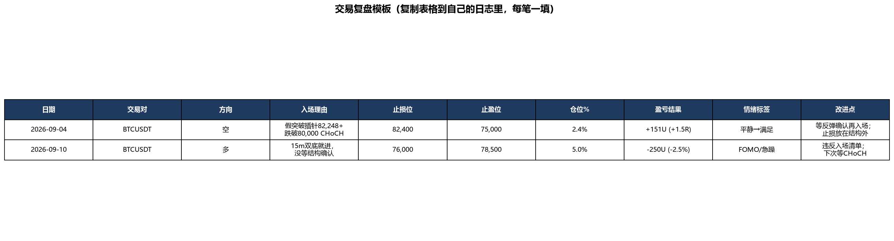
fig14复盘表格模板（示例两行）
08 · 完整交易走查：BTC 假突破+清算反转
08 · 完整交易走查：BTC 假突破 + 清算反转（2026-09）
本章解决什么问题：把 01-07 章的知识串起来，在一笔真实行情上完整走一遍——结构 → 信号 → 入场 → 止损 → 仓位 → 出场 → 复盘。 目标：合上书，你能照着这套流程独立走完一笔交易。 配套图：figures/fig15_case_walkthrough.png（整段 K 线与所有标注）
1. 直觉理解（一句话本质）
交易 = 在结构确定的位置，等信号确认，用公式控风险，然后按计划执行到出场。这一章就是一次全流程演示：没有任何一步靠"感觉"。
2. 行情背景（真实数据，2026-09）
2026 年 9 月初，BTC 在 76,000-79,000 震荡一个月。9/1 高点 78,866（约 78,900）反复压制价格，形成前期阻力区。9/3 下午价格放量拉起，发生一次教科书级假突破 + 清算反转：09-03 14:00 大阳线 78,797 → 80,514（突破前期阻力 78,900，一路拉到 80,514） 09-03 21:00 插针高点 82,248（上方空头止损被扫，随即回落） 09-04 00:00-11:00 80,542~81,400 窄幅整理（诱多） 09-04 12:00 单根大阴线 高 81,318 → 低 79,141，收 79,425（跌破 80,000，CHoCH 确认） 09-04 之后 一路阴跌，09-15 最低 74,910
3. 实战应用（六步走查）
3.1 第一步：识别市场结构（先大后小）
- 大周期（4H/1D）：8 月以来 74,000-82,000 大区间震荡，无单边趋势 → 不追突破，等反转或回踩。
- 小周期（1H）：79,000 附近是多次反弹高点（9/1 高 78,866、9/3 上午反复测试），这是供给区，也是上方空头止损最密集的位置 → 流动性池。
结论：上方 79,000 上方是流动性池（空头止损），一旦突破扫掉，价格往往失去继续上行的燃料——"突破=陷阱"的高发场景。
3.2 第二步：在哪里等什么信号（不预测，只等确认）
- 位置：等价格突破 79,000 后的反应。
- 信号（二选一）：
- A 激进：突破后 1-2 根 1H 内长上影/大阴线收回 79,000 下方；
- B 稳健（本案例采用）：跌破 80,000 整数关口 + 跌破 9/4 早盘整理区间下沿（80,542），即CHoCH。
9/4 12:00 大阴线（高 81,318 → 低 79,141，收 79,425）单根完成 CHoCH。此时不需要预测，只需按计划执行。
3.3 第三步：为什么在这里入场（写进复盘表）
做空逻辑：
假突破插针 82,248 扫掉上方空头止损 → 上方流动性被消耗 → 跌破 80,000 确认反转 → 做空。
强弱判断： - ✅ 插针后没站稳：上方没有真实买盘承接； - ✅ 诱多 11 小时后放量下破：多头已无力； - ⚠️ 反面证据：若真突破应继续向上 → 所以止损必须放插针上方，逻辑失效就走。
入场：9/4 13:00 反弹到79,500挂市价空单（等反弹比追 12:00 大阴线优——止损距离更短）。
3.4 第四步：止损放哪（结构止损 + 清算距离知识）
- 结构止损：插针高点 82,248上方（82,400）——回到这里 = "假突破"逻辑不成立，认错出场。
- 为什么不放 80,000？心理关口一根反弹阳线就能扫掉；结构止损必须放逻辑失效的位置。
- 结合 05 章：止损距离 3.65% → 若 100x 满仓，爆仓距离仅 0.45%，价格没到止损先爆仓 → 宽止损单子杠杆必须降（本案例 10x）。止损距离 = (82,400 − 79,500) / 79,500 = 3.65%

这张图把整个案例画在一张图里：①突破阻力 78,900（大阳线 78,797→80,514）②假突破插针 82,248（扫空头止损）③诱多整理 80,542~81,400 ④CHoCH 跌破 80,000 ⑤入场 79,500 做空，止损 82,400（插针上方）、止盈 75,000（RR≈1.55）。对照文字走一遍，你就能在真实图表上复现这套流程。
3.5 第五步：仓位怎么算（04 章公式，不拍脑袋）
账户 10,000U，单笔风险 1%（100U），止损 3.65%：名义价值 = 风险金额 ÷ 止损距离 = 100 / 3.65% = 2,740U 保证金（10x）= 2,740 / 10 = 274U（账户 2.74%） 最大亏损 = 2,740 × 3.65% = 100U = 账户 1% ✓ - 10x 逐仓爆仓距离 ≈ 9.5% > 止损 3.65% ✅ 不会先爆仓 - 手续费：2,740 × 0.077% × 2 ≈ 4.2U，占风险 4.2% ✅ 可接受
3.6 第六步：什么时候出场 + 复盘
- 初始止盈：75,000（前期震荡区下沿 + 整数关口），RR = 4500/2900 =1.55:1。
- 实际走势：9/5-9/9 在 78,000-79,700 磨蹭 5 天 → 按计划持仓（无新信息不提前跑）；9/10 加速下杀，9/15 最低 74,910 触发止盈。盈利 = 2,740 × (79,500−75,000)/79,500 ≈ 155U − 手续费 4.2U ≈ +151U（账户 +1.5%）
3.7 六步走查的公式推导依据（每一步为什么这么做）
| 步骤 | 动作 | 公式/推导依据 | 在手册哪里 |
|---|---|---|---|
| ① 识别结构 | 先大周期后小周期，找供需区 | HH/HL/CHoCH 定义 | 01 章 3.1 |
| ② 等信号 | 不预测，等假突破收回/CHoCH | 流动性猎杀机制（止损池被扫=燃料耗尽） | 01 章 3.3-3.5 |
| ③ 定入场 | 等反弹入场，不追大阴线 | 追单=接大户卖单；同结构止损下入场价越好 RR 越高 | 01 章 3.5、03 章 2.2 |
| ④ 定止损 | 放"逻辑失效位"（插针上方），不放心理关口 | 止损池机制；止损 ≥1.5-2×ATR | 01 章 3.4、02 章 3.1 |
| ⑤ 定仓位 | 风险固定法：名义 = 账户×1%÷止损距离 | 凯利打折→单笔风险 1-2%；爆仓距离 ≥2×止损 | 04 章 3.3、5.4、6.1 |
| ⑥ 定出场 | 止盈放结构位，按计划执行，不提前平 | 提前平仓缩小 W→EV 缩水；出场纪律是 EV 变量之一 | 07 章 2.2 |
为什么是这个顺序（不能跳步）：①决定方向 → ②③决定"进场质量" → ④决定"最大亏损" → ⑤决定"亏多少" → ⑥决定"赚多少"。六步正好是 EV = p×W − q×L − f 的完整装配线：①-③ 管 p，④-⑤ 管 L，⑥ 管 W。
3.8 边界条件（什么时候这套流程不适用）
- 高波动事件日（CPI/美联储/减半前后）：插针和跳空放大，结构止损可能被一根 K 线击穿，仓位减半或空仓（见 05 章风险控制）。
- 单边加速行情（2020-12 那种连阳）："等反弹入场"可能永远等不到——用突破+1 根收盘确认替代（03 章 2.2 边界）。
- 震荡区间内：本案例是"区间边缘反转"；区间中间不要用突破逻辑——没有结构位做止损参考，RR 算不出来。ADX<20 时（02 章）优先空仓或区间操作，别用趋势单的止损宽度去赌震荡。
3.9 速记卡（Anki）
- Q: 为什么"磨蹭 5 天"不平仓？ A: 没有新信息 = 按计划持仓，提前平是情绪不是纪律。因为止盈 75,000 没到、止损 82,400 没破，两个出场条件都没触发，价格在区间内磨蹭是正常波动——此刻平仓等于用"怕浮盈回吐"的情绪替换 07 章第 5 条出场纪律，会直接缩小 W、污染 EV。
- Q: 本案例空单的入场/止损/止盈各是多少？ A: 入场 79,500（等反弹），止损 82,400（插针 82,248 上方），止盈 75,000；止损距离 3.65%，RR = 4500/2900 ≈ 1.55。
- Q: 为什么止损放 82,400 而不是 80,000？ A: 80,000 是心理关口，一根反弹阳线就能扫掉；82,400 在插针高点上方 = "假突破逻辑被证伪"的位置，回到那里才该认错。
- Q: 为什么这笔用 10x 而不是 100x？ A: 止损距离 3.65%，100x 逐仓爆仓距离仅 0.45%——价格没到止损先爆仓；10x 逐仓爆仓距离 ≈9.5% > 3.65%，才"先止损、后爆仓"。
思考题（先自己想，答案在末尾）
- 如果 9/5 价格没有阴跌而是直接站上 82,400，你应该做什么？为什么这笔单子依然不算"错"？
- 假设你想把 RR 提到 2:1：止盈放哪？风险不变的话仓位要变吗？
- 用同样六步走查 2026-09-18 ~ 09-21 行情（9/18 从 78,027 涨到 9/21 的 85,877）——那是"突破后的延续"，和本案例"假突破反转"差别在哪？
参考答案：
- 止损出场（82,400 触发），亏损 = 100U = 账户 1%。这笔依然是"好交易"：你按计划执行了，结果由市场决定——交易的目的是执行正确的流程，不是每笔都赢。连亏 5 笔各 1% 才 -5%，但一笔纪律性爆仓（05 章 100x 案例）就直接归零。
- 止盈移到 75,000 下方对应 RR 2:1 的位置（约 73,700 = 79,500 − 2×2,900）；仓位不变——仓位只由风险金额和止损距离决定（04 章），与止盈无关；代价是止盈更难触发，胜率下降（02 章 1:2 vs 1:1 盈亏平衡对比）。
- 那一段是真突破：结构上突破 80,000 后没有收回、没有插针消耗流动性，而是阳线延续 → 应对是追多或回踩多，止损放突破位下方；和本案例的关键区别在"突破后价格的态度"——站稳 vs 收回，这正是 03b 章多周期共振与 06 章"信号=结构被否定/被确认"的活教材。
新手最常踩的坑
- [ ] 我入场前画了结构图（大周期→小周期→流动性池）吗？
- [ ] 我等的信号是可描述的（CHoCH/收回），还是"感觉到位了"？
- [ ] 我的止损在逻辑失效位，不在心理关口？
- [ ] 我的仓位是用公式算的，杠杆匹配止损距离？
- [ ] 这单如果亏了，我能按 07 章五维度写满复盘表吗？
📊 本章配图（大图 / 全景，可点击放大）
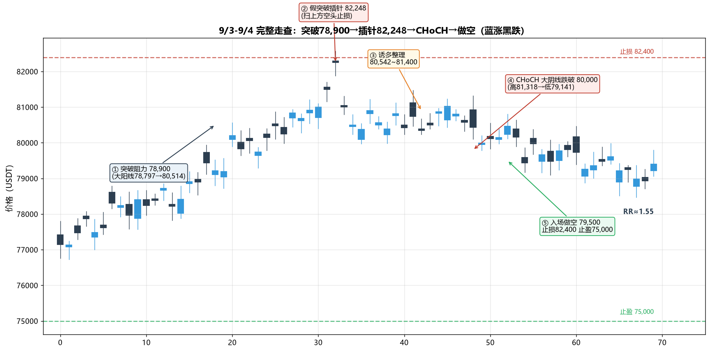
fig15 假突破+清算反转案例走查（结构/入场/止损/止盈标注）